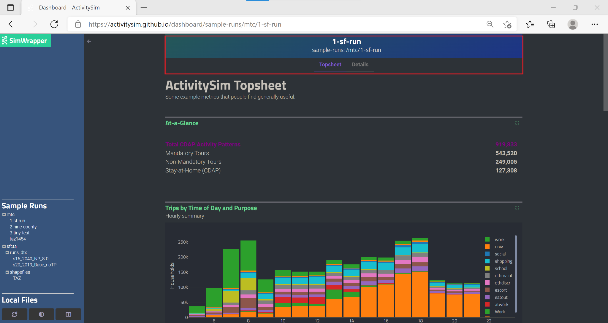

Core Components#
ActivitySim’s core components include features for multiprocessing, data management, utility expressions, choice models, person time window management, and helper functions. These core components include the multiprocessor, network LOS (skim) manager, the data pipeline manager, the random number manager, the tracer, sampling methods, simulation methods, model specification readers and expression evaluators, choice models, timetable, transit virtual path builder, and helper functions.
Multiprocessing#
Parallelization using multiprocessing
API#
- activitysim.core.mp_tasks.MEM_TRACE_TICKS = 5#
mp_tasks - activitysim multiprocessing overview
Activitysim runs a list of models sequentially, performing various computational operations on tables. Model steps can modify values in existing tables, add columns, or create additional tables. Activitysim provides the facility, via expression files, to specify vectorized operations on data tables. The ability to vectorize operations depends upon the independence of the computations performed on the vectorized elements.
Python is agonizingly slow performing scalar operations sequentially on large datasets, so vectorization (using pandas and/or numpy) is essential for good performance.
Fortunately most activity based model simulation steps are row independent at the household, person, tour, or trip level. The decisions for one household are independent of the choices made by other households. Thus it is (generally speaking) possible to run an entire simulation on a household sample with only one household, and get the same result for that household as you would running the simulation on a thousand households. (See the shared data section below for an exception to this highly convenient situation.)
The random number generator supports this goal by providing streams of random numbers for each households and person that are mutually independent and repeatable across model runs and processes.
To the extent that simulation model steps are row independent, we can implement most simulations as a series of vectorized operations on pandas DataFrames and numpy arrays. These vectorized operations are much faster than sequential python because they are implemented by native code (compiled C) and are to some extent multi-threaded. But the benefits of numpy multi-processing are limited because they only apply to atomic numpy or pandas calls, and as soon as control returns to python it is single-threaded and slow.
Multi-threading is not an attractive strategy to get around the python performance problem because of the limitations imposed by python’s global interpreter lock (GIL). Rather than struggling with python multi-threading, this module uses the python multiprocessing to parallelize certain models.
Because of activitysim’s modular and extensible architecture, we don’t hardwire the multiprocessing architecture. The specification of which models should be run in parallel, how many processers should be used, and the segmentation of the data between processes are all specified in the settings config file. For conceptual simplicity, the single processing model as treated as dominant (because even though in practice multiprocessing may be the norm for production runs, the single-processing model will be used in development and debugging and keeping it dominant will tend to concentrate the multiprocessing-specific code in one place and prevent multiprocessing considerations from permeating the code base obscuring the model-specific logic.
The primary function of the multiprocessing settings are to identify distinct stages of computation, and to specify how many simultaneous processes should be used to perform them, and how the data to be treated should be apportioned between those processes. We assume that the data can be apportioned between subprocesses according to the index of a single primary table (e.g. households) or else are by derivative or dependent tables that reference that table’s index (primary key) with a ref_col (foreign key) sharing the name of the primary table’s key.
Generally speaking, we assume that any new tables that are created are directly dependent on the previously existing tables, and all rows in new tables are either attributable to previously existing rows in the pipeline tables, or are global utility tables that are identical across sub-processes.
Note: There are a few exceptions to ‘row independence’, such as school and location choice models, where the model behavior is externally constrained or adjusted. For instance, we want school location choice to match known aggregate school enrollments by zone. Similarly, a parking model (not yet implemented) might be constrained by availability. These situations require special handling.
models: ### mp_initialize step - initialize_landuse - compute_accessibility - initialize_households ### mp_households step - school_location - workplace_location - auto_ownership_simulate - free_parking ### mp_summarize step - write_tables multiprocess_steps: - name: mp_initialize begin: initialize_landuse - name: mp_households begin: school_location num_processes: 2 slice: tables: - households - persons - name: mp_summarize begin: write_tables
The multiprocess_steps setting above annotates the models list to indicate that the simulation should be broken into three steps.
The first multiprocess_step (mp_initialize) begins with the initialize_landuse step and is implicity single-process because there is no ‘slice’ key indicating how to apportion the tables. This first step includes all models listed in the ‘models’ setting up until the first step in the next multiprocess_steps.
The second multiprocess_step (mp_households) starts with the school location model and continues through auto_ownership_simulate. The ‘slice’ info indicates that the tables should be sliced by households, and that persons is a dependent table and so and persons with a ref_col (foreign key column with the same name as the Households table index) referencing a household record should be taken to ‘belong’ to that household. Similarly, any other table that either share an index (i.e. having the same name) with either the households or persons table, or have a ref_col to either of their indexes, should also be considered a dependent table.
The num_processes setting of 2 indicates that the pipeline should be split in two, and half of the households should be apportioned into each subprocess pipeline, and all dependent tables should likewise be apportioned accordingly. All other tables (e.g. land_use) that do share an index (name) or have a ref_col should be considered mirrored and be included in their entirety.
The primary table is sliced by num_processes-sized strides. (e.g. for num_processes == 2, the sub-processes get every second record starting at offsets 0 and 1 respectively. All other dependent tables slices are based (directly or indirectly) on this primary stride segmentation of the primary table index.
Two separate sub-process are launched (num_processes == 2) and each passed the name of their apportioned pipeline file. They execute independently and if they terminate successfully, their contents are then coalesced into a single pipeline file whose tables should then be essentially the same as it had been generated by a single process.
We assume that any new tables that are created by the sub-processes are directly dependent on the previously primary tables or are mirrored. Thus we can coalesce the sub-process pipelines by concatenating the primary and dependent tables and simply retaining any copy of the mirrored tables (since they should all be identical.)
The third multiprocess_step (mp_summarize) then is handled in single-process mode and runs the write_tables model, writing the results, but also leaving the tables in the pipeline, with essentially the same tables and results as if the whole simulation had been run as a single process.
This is called by the main process to allocate memory buffer to share with subprocs
- Returns:
- multiprocessing.RawArray
This is called by the main process to allocate memory buffer to share with subprocs
- Returns:
- multiprocessing.RawArray
This is called by the main process to allocate shared memory buffer to share with subprocs
Note: Buffers must be allocated BEFORE network_los.load_data
- Returns:
- skim_buffersdict {<skim_tag>: <multiprocessing.RawArray>}
- activitysim.core.mp_tasks.apportion_pipeline(state: State, sub_proc_names, step_info)#
apportion pipeline for multiprocessing step
create pipeline files for sub_procs, apportioning data based on slice_rules
Called at the beginning of a multiprocess step prior to launching the sub-processes Pipeline files have well known names (pipeline file name prefixed by subjob name)
- Parameters:
- sub_proc_nameslist[str]
names of the sub processes to apportion
- step_infodict
step_info from multiprocess_steps for step we are apportioning pipeline tables for
- Returns:
- creates apportioned pipeline files for each sub job
- activitysim.core.mp_tasks.build_slice_rules(state: State, slice_info, pipeline_tables)#
based on slice_info for current step from run_list, generate a recipe for slicing the tables in the pipeline (passed in tables parameter)
- slice_info is a dict with two well-known keys:
‘tables’: required list of table names (order matters!) ‘except’: optional list of tables not to slice even if they have a sliceable index name
Note: tables listed in slice_info must appear in same order and before any others in tables dict
The index of the first table in the ‘tables’ list is the primary_slicer.
Any other tables listed are dependent tables with either ref_cols to the primary_slicer or with the same index (i.e. having an index with the same name). This cascades, so any tables dependent on the primary_table can in turn have dependent tables that will be sliced by index or ref_col.
For instance, if the primary_slicer is households, then persons can be sliced because it has a ref_col to (column with the same same name as) the household table index. And the tours table can be sliced since it has a ref_col to persons. Tables can also be sliced by index. For instance the person_windows table can be sliced because it has an index with the same names as the persons table.
slice_info from multiprocess_steps
slice: tables: - households - persons
tables from pipeline
Table Name
Index
ref_col
households
household_id
persons
person_id
household_id
person_windows
person_id
accessibility
zone_id
generated slice_rules dict
households: slice_by: primary <- primary table is sliced in num_processors-sized strides persons: source: households slice_by: column column: household_id <- slice by ref_col (foreign key) to households person_windows: source: persons slice_by: index <- slice by index of persons table accessibility: slice_by: <- mirrored (non-dependent) tables don't get sliced land_use: slice_by:
- Parameters:
- slice_infodict
‘slice’ info from run_list for this step
- pipeline_tablesdict {<table_name>, <pandas.DataFrame>}
dict of all tables from the pipeline keyed by table name
- Returns:
- slice_rulesdict
- activitysim.core.mp_tasks.coalesce_pipelines(state: State, sub_proc_names, slice_info)#
Coalesce the data in the sub_processes apportioned pipelines back into a single pipeline
We use slice_rules to distinguish sliced (apportioned) tables from mirrored tables.
Sliced tables are concatenated to create a single omnibus table with data from all sub_procs but mirrored tables are the same across all sub_procs, so we can grab a copy from any pipeline.
- Parameters:
- sub_proc_nameslist[str]
- slice_infodict
slice_info from multiprocess_steps
- Returns:
- creates an omnibus pipeline with coalesced data from individual sub_proc pipelines
- activitysim.core.mp_tasks.drop_breadcrumb(state: State, step_name, crumb, value=True)#
Add (crumb: value) to specified step in breadcrumbs and flush breadcrumbs to file run can be resumed with resume_after
Breadcrumbs provides a record of steps that have been run for use when resuming Basically, we want to know which steps have been run, which phases completed (i.e. apportion, simulate, coalesce). For multi-processed simulate steps, we also want to know which sub-processes completed successfully, because if resume_after is LAST_CHECKPOINT we don’t have to rerun the successful ones.
- Parameters:
- step_namestr
- crumbstr
- valueyaml-writable value
- Returns:
- activitysim.core.mp_tasks.get_breadcrumbs(state: State, run_list)#
Read, validate, and annotate breadcrumb file from previous run
if resume_after specifies a model name, we need to determine which step it falls within, drop any subsequent steps, and set the ‘simulate’ and ‘coalesce’ to None so
Extract from breadcrumbs file showing completed mp_households step with 2 processes:
- apportion: true completed: [mp_households_0, mp_households_1] name: mp_households simulate: true coalesce: true
- Parameters:
- run_listdict
validated and annotated run_list from settings
- Returns:
- breadcrumbsdict
validated and annotated breadcrumbs file from previous run
- activitysim.core.mp_tasks.get_run_list(state: State)#
validate and annotate run_list from settings
Assign defaults to missing settings (e.g. chunk_size) Build individual step model lists based on step starts If resuming, read breadcrumbs file for info on previous run execution status
# annotated run_list with two steps, the second with 2 processors
resume_after: None multiprocess: True models: - initialize_landuse - compute_accessibility - initialize_households - school_location - workplace_location multiprocess_steps: step: mp_initialize begin: initialize_landuse name: mp_initialize models: - initialize_landuse - compute_accessibility - initialize_households num_processes: 1 chunk_size: 0 step_num: 0 step: mp_households begin: school_location slice: {'tables': ['households', 'persons']} name: mp_households models: - school_location - workplace_location num_processes: 2 chunk_size: 10000 step_num: 1
- Returns:
- run_listdict
validated and annotated run_list
- activitysim.core.mp_tasks.mp_apportion_pipeline(injectables, sub_proc_names, step_info)#
mp entry point for apportion_pipeline
- Parameters:
- injectablesdict
injectables from parent
- sub_proc_nameslist[str]
names of the sub processes to apportion
- step_infodict
step_info for multiprocess_step we are apportioning
- activitysim.core.mp_tasks.mp_coalesce_pipelines(injectables, sub_proc_names, slice_info)#
mp entry point for coalesce_pipeline
- Parameters:
- injectablesdict
injectables from parent
- sub_proc_nameslist[str]
names of the sub processes to apportion
- slice_infodict
slice_info from multiprocess_steps
- activitysim.core.mp_tasks.mp_run_simulation(locutor: bool, queue, injectables, step_info, resume_after, **kwargs)#
mp entry point for run_simulation
- Parameters:
- locutor
- queue
- injectables
- step_info
- resume_afterbool
- kwargsdict
shared_data_buffers passed as kwargs to avoid picking dict
- activitysim.core.mp_tasks.mp_setup_skims(injectables, **kwargs)#
Sub process to load skim data into shared_data
There is no particular necessity to perform this in a sub process instead of the parent except to ensure that this heavyweight task has no side-effects (e.g. loading injectables)
- Parameters:
- injectablesdict
injectables from parent
- kwargsdict
shared_data_buffers passed as kwargs to avoid picking dict
- activitysim.core.mp_tasks.parquet_pipeline_table_keys(pipeline_path: Path)#
return dict of current (as of last checkpoint) pipeline tables and their checkpoint-specific hdf5_keys
This facilitates reading pipeline tables directly from a ‘raw’ open pandas.HDFStore without opening it as a pipeline (e.g. when apportioning and coalescing pipelines)
We currently only ever need to do this from the last checkpoint, so the ability to specify checkpoint_name is not required, and thus omitted.
- Returns:
- checkpoint_namename of the checkpoint
- checkpoint_tablesdict {<table_name>: <table_path>}
- activitysim.core.mp_tasks.pipeline_table_keys(pipeline_store)#
return dict of current (as of last checkpoint) pipeline tables and their checkpoint-specific hdf5_keys
This facilitates reading pipeline tables directly from a ‘raw’ open pandas.HDFStore without opening it as a pipeline (e.g. when apportioning and coalescing pipelines)
We currently only ever need to do this from the last checkpoint, so the ability to specify checkpoint_name is not required, and thus omitted.
- Parameters:
- pipeline_storeopen hdf5 pipeline_store
- Returns:
- checkpoint_namename of the checkpoint
- checkpoint_tablesdict {<table_name>: <table_key>}
- activitysim.core.mp_tasks.print_run_list(run_list, output_file=None)#
Print run_list to stdout or file (informational - not read back in)
- Parameters:
- run_listdict
- output_fileopen file
- activitysim.core.mp_tasks.read_breadcrumbs(state: State)#
Read breadcrumbs file from previous run
write_breadcrumbs wrote OrderedDict steps as list so ordered is preserved (step names are duplicated in steps)
- Returns:
- breadcrumbsOrderedDict
- activitysim.core.mp_tasks.run_multiprocess(state: State, injectables)#
run the steps in run_list, possibly resuming after checkpoint specified by resume_after
we never open the pipeline since that is all done within multi-processing steps - mp_apportion_pipeline, run_sub_simulations, mp_coalesce_pipelines - each of which opens the pipeline/s and closes it/them within the sub-process This ‘feature’ makes the pipeline state a bit opaque to us, for better or worse…
Steps may be either single or multi process. For multi-process steps, we need to apportion pipelines before running sub processes and coalesce them afterwards
injectables arg allows propagation of setting values that were overridden on the command line (parent process command line arguments are not available to sub-processes in Windows)
allocate shared data buffers for skims and shadow_pricing
load shared skim data from OMX files
run each (single or multiprocess) step in turn
Drop breadcrumbs along the way to facilitate resuming in a later run
- Parameters:
- run_listdict
annotated run_list (including prior run breadcrumbs if resuming)
- injectablesdict
dict of values to inject in sub-processes
- activitysim.core.mp_tasks.run_simulation(state: State, queue, step_info, resume_after, shared_data_buffer)#
run step models as subtask
called once to run each individual sub process in multiprocess step
Unless actually resuming resuming, resume_after will be None for first step, and then FINAL for subsequent steps so pipelines opened to resume where previous step left off
- Parameters:
- queuemultiprocessing.Queue
- step_infodict
step_info for current step from multiprocess_steps
- resume_afterstr or None
- shared_data_bufferdict
dict of shared data (e.g. skims and shadow_pricing)
- activitysim.core.mp_tasks.run_sub_simulations(state: State, injectables, shared_data_buffers, step_info, process_names, resume_after, previously_completed, fail_fast)#
Launch sub processes to run models in step according to specification in step_info.
If resume_after is LAST_CHECKPOINT, then pick up where previous run left off, using breadcrumbs from previous run. If some sub-processes completed in the prior run, then skip rerunning them.
If resume_after specifies a checkpiont, skip checkpoints that precede the resume_after
Drop ‘completed’ breadcrumbs for this run as sub-processes terminate
Wait for all sub-processes to terminate and return list of those that completed successfully.
- Parameters:
- injectablesdict
values to inject in subprocesses
- shared_data_buffersdict
dict of shared_data for sub-processes (e.g. skim and shadow pricing data)
- step_infodict
step_info from run_list
- process_nameslist of str
list of sub process names to in parallel
- resume_afterstr or None
name of simulation to resume after, or LAST_CHECKPOINT to resume where previous run left off
- previously_completedlist of str
names of processes that successfully completed in previous run
- fail_fastbool
whether to raise error if a sub process terminates with nonzero exitcode
- Returns:
- completedlist[str]
names of sub_processes that completed successfully
- activitysim.core.mp_tasks.run_sub_task(state: State, p)#
Run process p synchroneously,
Return when sub process terminates, or raise error if exitcode is nonzero
- Parameters:
- pmultiprocessing.Process
- activitysim.core.mp_tasks.setup_injectables_and_logging(injectables, locutor: bool = True) State#
Setup injectables (passed by parent process) within sub process
we sometimes want only one of the sub-processes to perform an action (e.g. write shadow prices) the locutor flag indicates that this sub process is the designated singleton spokesperson
- Parameters:
- injectablesdict {<injectable_name>: <value>}
dict of injectables passed by parent process
- locutorbool
is this sub process the designated spokesperson
- Returns:
- injects injectables
- activitysim.core.mp_tasks.write_breadcrumbs(state: State, breadcrumbs)#
Write breadcrumbs file with execution history of multiprocess run
Write steps as array so order is preserved (step names are duplicated in steps)
Extract from breadcrumbs file showing completed mp_households step with 2 processes:
- apportion: true coalesce: true completed: [mp_households_0, mp_households_1] name: mp_households simulate: true
- Parameters:
- breadcrumbsOrderedDict
Data Management#
Input#
Input data table functions
API#
- activitysim.core.input.read_from_table_info(table_info: InputTable, state)#
Read input text files and return cleaned up DataFrame.
table_info is a dictionary that specifies the following input params.
See input_table_list in settings.yaml in the example folder for a working example
key
description
tablename
name of pipeline table in which to store dataframe
filename
name of csv file to read (in data_dir)
index_col
name of column to set as dataframe index column
h5_tablename
name of target table in HDF5 file
LOS#
Network Level of Service (LOS) data access
API#
- class activitysim.core.los.Network_LOS(state, los_settings_file_name='network_los.yaml')#
singleton object to manage skims and skim-related tables los_settings_file_name: str # e.g. 'network_los.yaml' skim_dtype_name:str # e.g. 'float32' dict_factory_name: str # e.g. 'NumpyArraySkimFactory' zone_system: str # str (ONE_ZONE, TWO_ZONE, or THREE_ZONE) skim_time_periods = None # list of str e.g. ['AM', 'MD', 'PM'' skims_info: dict # dict of SkimInfo keyed by skim_tag skim_buffers: dict # if multiprocessing, dict of multiprocessing.Array buffers keyed by skim_tag skim_dicts: dice # dict of SkimDict keyed by skim_tag # TWO_ZONE and THREE_ZONE maz_taz_df: pandas.DataFrame # DataFrame with two columns, MAZ and TAZ, mapping MAZ to containing TAZ maz_to_maz_df: pandas.DataFrame # maz_to_maz attributes for MazSkimDict sparse skims # indexed by synthetic omaz/dmaz index for faster get_mazpairs lookup) maz_ceiling: int # max maz_id + 1 (to compute synthetic omaz/dmaz index by get_mazpairs) max_blend_distance: dict # dict of int maz_to_maz max_blend_distance values keyed by skim_tag # THREE_ZONE only tap_df: pandas.DataFrame tap_lines_df: pandas.DataFrame # if specified in settings, list of transit lines served, indexed by TAP # use to prune maz_to_tap_dfs to drop more distant TAPS with redundant service # since a TAP can serve multiple lines, tap_lines_df TAP index is not unique maz_to_tap_dfs: dict # dict of maz_to_tap DataFrames indexed by access mode (e.g. 'walk', 'drive') # maz_to_tap dfs have OMAZ and DMAZ columns plus additional attribute columns tap_tap_uid: TapTapUidCalculator
Allocate multiprocessing.RawArray shared data buffers sized to hold data for the omx skims. Only called when multiprocessing - BEFORE load_data()
Returns dict of allocated buffers so they can be added to mp_tasks can add them to dict of data to be shared with subprocesses.
Note: we are only allocating storage, but not loading any skim data into it
- Returns:
- dict of multiprocessing.RawArray keyed by skim_tag
- create_skim_dict(skim_tag, _override_offset_int=None)#
Create a new SkimDict of type specified by skim_tag (e.g. ‘taz’, ‘maz’ or ‘tap’)
- Parameters:
- skim_tagstr
- _override_offset_intint, optional
Override the offset int for this dictionary. Use this to set that offset to zero when zone id’s have been pre-processed to be zero-based contiguous integers.
- Returns:
- SkimDict or subclass (e.g. MazSkimDict)
- get_default_skim_dict()#
Get the default (non-transit) skim dict for the (1, 2, or 3) zone_system
- Returns:
- TAZ SkimDict for ONE_ZONE, MazSkimDict for TWO_ZONE and THREE_ZONE
- get_maz_to_taz_series(state)#
pd.Series: Index is the MAZ, value is the corresponding TAZ
- get_mazpairs(omaz, dmaz, attribute)#
look up attribute values of maz od pairs in sparse maz_to_maz df
- Parameters:
- omaz: array-like list of omaz zone_ids
- dmaz: array-like list of omaz zone_ids
- attribute: str name of attribute column in maz_to_maz_df
- Returns:
- Numpy.ndarray: list of attribute values for od pairs
- get_skim_dict(skim_tag)#
Get SkimDict for the specified skim_tag (e.g. ‘taz’, ‘maz’, or ‘tap’)
- Returns:
- SkimDict or subclass (e.g. MazSkimDict) or SkimDataset
- get_tappairs3d(otap, dtap, dim3, key)#
TAP skim lookup
FIXME - why do we provide this for taps, but use skim wrappers for TAZ?
- Parameters:
- otap: pandas.Series
origin (boarding tap) zone_ids
- dtap: pandas.Series
dest (aligting tap) zone_ids
- dim3: pandas.Series or str
dim3 (e.g. tod) str
- key
skim key (e.g. ‘IWAIT_SET1’)
- Returns:
- Numpy.ndarray: list of tap skim values for odt tuples
- load_data()#
Load tables and skims from files specified in network_los settigns
- load_settings()#
Read setting file and initialize object variables (see class docstring for list of object variables)
Load omx skim data into shared_data buffers Only called when multiprocessing - BEFORE any models are run or any call to load_data()
- Parameters:
- shared_data_buffers: dict of multiprocessing.RawArray keyed by skim_tag
- load_skim_info()#
read skim info from omx files into SkimInfo, and store in self.skims_info dict keyed by skim_tag
ONE_ZONE and TWO_ZONE systems have only TAZ skims THREE_ZONE systems have both TAZ and TAP skims
- map_maz_to_taz(s)#
Convert MAZ’s to TAZ’s
- Parameters:
- sArray-like
Integer MAZ values
- Returns:
- pd.Series
Integer TAZ values
- multiprocess()#
return True if this is a multiprocessing run (even if it is a main or single-process subprocess)
- Returns:
- bool
- omx_file_names(skim_tag)#
Return list of omx file names from network_los settings file for the specified skim_tag (e.g. ‘taz’)
- Parameters:
- skim_tag: str (e.g. ‘taz’)
- Returns:
- list of str
- skim_time_period_label(time_period, fillna=None, as_cat=False, broadcast_to=None)#
convert time period times to skim time period labels (e.g. 9 -> ‘AM’)
- Parameters:
- time_periodpandas Series
- Returns:
- pandas Series
string time period labels
- zarr_file_name(skim_tag)#
Return zarr directory name from network_los settings file for the specified skim_tag (e.g. ‘taz’)
- Parameters:
- skim_tag: str (e.g. ‘taz’)
- Returns:
- str
- zarr_pre_encoding(skim_tag)#
Return digital encoding pre-processing before writing to zarr for the specified skim_tag (e.g. ‘taz’)
- Parameters:
- skim_tag: str (e.g. ‘taz’)
- Returns:
- list or None
Skims#
Skims data access
API#
- class activitysim.core.skim_dict_factory.AbstractSkimFactory(network_los)#
Provide access to skim data from store.
- load_skim_info(skim_tag: str): dict
Read omx files for skim <skim_tag> (e.g. ‘TAZ’) and build skim_info dict
- get_skim_data(skim_tag: str, skim_info: dict): SkimData
Read skim data from backing store and return it as a 3D ndarray quack-alike SkimData object
- allocate_skim_buffer(skim_info, shared: bool): 1D array buffer sized for 3D SkimData
Allocate a ram skim buffer (ndarray or multiprocessing.Array) to use as frombuffer for SkimData
- allocate_skim_buffer(skim_info, shared=False)#
For multiprocessing
Does subclass support shareable data for multiprocessing
- Returns:
- boolean
- class activitysim.core.skim_dict_factory.JitMemMapSkimData(skim_cache_path, skim_info)#
SkimData subclass for just-in-time memmap.
Since opening a memmap is fast, open the memmap read the data on demand and immediately close it. This essentially eliminates RAM usage, but it means we are loading the data every time we access the skim, which may be significantly slower, depending on patterns of usage.
- property shape#
- Returns:
- list-like shape tuple as returned by numpy.shape
- class activitysim.core.skim_dict_factory.MemMapSkimFactory(network_los)#
The numpy.memmap docs states: The memmap object can be used anywhere an ndarray is accepted. You might think that since memmap duck-types ndarray, we could simply wrap it in a SkimData object.
But, as the numpy.memmap docs also say: “Memory-mapped files are used for accessing small segments of large files on disk, without reading the entire file into memory.”
The words “small segments” are not accidental, because, as you gradually access all the parts of the memmapped array, memory usage increases as all the memory is loaded into RAM.
Under this scenario, the MemMapSkimFactory operates as a just-in-time loader, with no net savings in RAM footprint (other than potentially avoiding loading any unused skims).
Alternatively, since opening a memmap is fast, you could just open the memmap read the data on demand, and immediately close it. This essentially eliminates RAM usage, but it means you are loading the data every time you access the skim, which, depending on you patterns of usage, may or may not be acceptable.
- get_skim_data(skim_tag, skim_info)#
Read skim data from backing store and return it as a 3D ndarray quack-alike SkimData object (either a JitMemMapSkimData or a memmap backed SkimData object)
- Parameters:
- skim_tag: str
- skim_info: string
- Returns:
- SkimData or subclass
- class activitysim.core.skim_dict_factory.NumpyArraySkimFactory(network_los)#
- allocate_skim_buffer(skim_info, shared=False)#
Allocate a ram skim buffer to use as frombuffer for SkimData If shared is True, return a shareable multiprocessing.RawArray, otherwise a numpy.ndarray
- Parameters:
- skim_info: dict
- shared: boolean
- Returns:
- multiprocessing.RawArray or numpy.ndarray
- get_skim_data(skim_tag, skim_info)#
Read skim data from backing store and return it as a 3D ndarray quack-alike SkimData object
- Parameters:
- skim_tag: str
- skim_info: dict
- Returns:
- SkimData
- load_skims_to_buffer(skim_info, skim_buffer)#
Load skims from disk store (omx or cache) into ram skim buffer (multiprocessing.RawArray or numpy.ndarray)
- Parameters:
- skim_info: doct
- skim_buffer: 1D buffer sized to hold all skims (multiprocessing.RawArray or numpy.ndarray)
Does subclass support shareable data for multiprocessing
- Returns:
- boolean
- class activitysim.core.skim_dict_factory.SkimData(skim_data)#
A facade for 3D skim data exposing numpy indexing and shape The primary purpose is to document and police the api used to access skim data Subclasses using a different backing store to perform additional/alternative only need to implement the methods exposed here.
For instance, to open/close memmapped files just in time, or to access backing data via an alternate api
- property shape#
- Returns:
- list-like shape tuple as returned by numpy.shape
- class activitysim.core.skim_dictionary.DataFrameMatrix(df)#
Utility class to allow a pandas dataframe to be treated like a 2-D array, indexed by rowid, colname
For use in vectorized expressions where the desired values depend on both a row column selector e.g. size_terms.get(df.dest_taz, df.purpose)
df = pd.DataFrame({'a': [1,2,3,4,5], 'b': [10,20,30,40,50]}, index=[100,101,102,103,104]) dfm = DataFrameMatrix(df) dfm.get(row_ids=[100,100,103], col_ids=['a', 'b', 'a']) returns [1, 10, 4]
- get(row_ids, col_ids)#
- Parameters:
- row_ids - list of row_ids (df index values)
- col_ids - list of column names, one per row_id,
specifying column from which the value for that row should be retrieved
- Returns:
- series with one row per row_id, with the value from the column specified in col_ids
- class activitysim.core.skim_dictionary.MazSkimDict(state: State, skim_tag, network_los, taz_skim_dict)#
MazSkimDict provides a facade that allows skim-like lookup by maz orig,dest zone_id when there are often too many maz zones to create maz skims.
Dependencies: network_los.load_data must have already loaded: taz skim_dict, maz_to_maz_df, and maz_taz_df
It performs lookups from a sparse list of maz-maz od pairs on selected attributes (e.g. WALKDIST) where accuracy for nearby od pairs is critical. And is backed by a fallback taz skim dict to return values of for more distant pairs (or for skims that are not attributes in the maz-maz table.)
- get_skim_usage()#
return set of keys of skims looked up. e.g. {‘DIST’, ‘SOV’}
- Returns:
- set:
- lookup(orig, dest, key)#
Return list of skim values of skims(s) at orig/dest in skim with the specified key (e.g. ‘DIST’)
Look up in sparse table (backed by taz skims) if key is a sparse_key, otherwise look up in taz skims For taz skim lookups, the offset_mapper will convert maz zone_ids directly to taz skim indexes.
- Parameters:
- orig: list of orig zone_ids
- dest: list of dest zone_ids
- key: str
- Returns:
- Numpy.ndarray: list of skim values for od pairs
- sparse_lookup(orig, dest, key)#
Get impedence values for a set of origin, destination pairs.
- Parameters:
- orig1D array
- dest1D array
- keystr
skim key
- Returns:
- valuesnumpy 1D array
- class activitysim.core.skim_dictionary.OffsetMapper(offset_int=None, offset_list=None, offset_series=None)#
Utility to map skim zone ids to ordinal offsets (e.g. numpy array indices)
Can map either by a fixed offset (e.g. -1 to map 1-based to 0-based) or by an explicit mapping of zone id to offset (slower but more flexible)
Internally, there are two representations:
- offset_int:
int offset which when added to zone_id yields skim array index (e.g. -1 to map 1-based zones to 0-based index)
- offset_series:
pandas series with zone_id index and skim array offset values. Ordinarily, index is just range(0, omx_size) if series has duplicate offset values, this can map multiple zone_ids to a single skim array index (e.g. can map maz zone_ids to corresponding taz skim offset)
- map(zone_ids)#
map zone_ids to skim indexes
- Parameters:
- zone_idslist-like (numpy.ndarray, pandas.Int64Index, or pandas.Series)
- Returns:
- offsetsnumpy array of int
- set_offset_int(offset_int)#
specify int offset which when added to zone_id yields skim array index (e.g. -1 to map 1-based to 0-based)
- Parameters:
- offset_intint
- set_offset_list(offset_list)#
Convenience method to set offset_series using an integer list the same size as target skim dimension with implicit skim index mapping (e.g. an omx mapping as returned by omx_file.mapentries)
- Parameters:
- offset_listlist of int
- set_offset_series(offset_series)#
- Parameters:
- offset_series: pandas.Series
series with zone_id index and skim array offset values (can map many zone_ids to skim array index)
- class activitysim.core.skim_dictionary.Skim3dWrapper(skim_dict, orig_key, dest_key, dim3_key)#
This works the same as a SkimWrapper above, except the third dim3 is also supplied, and a 3D lookup is performed using orig, dest, and dim3.
- Parameters:
- skims: Skims
This is the Skims object to wrap
- dim3_keystr
This identifies the column in the dataframe which is used to select among Skim object using the SECOND item in each tuple (see above for a more complete description)
- set_df(df)#
Set the dataframe
- Parameters:
- dfDataFrame
The dataframe which contains the orig, dest, and dim3 values
- Returns:
- self (to facilitiate chaining)
- class activitysim.core.skim_dictionary.SkimDict(state, skim_tag, skim_info, skim_data)#
A SkimDict object is a wrapper around a dict of multiple skim objects, where each object is identified by a key.
Note that keys are either strings or tuples of two strings (to support stacking of skims.)
- get_skim_usage()#
return set of keys of skims looked up. e.g. {‘DIST’, ‘SOV’}
- Returns:
- set:
- lookup(orig, dest, key)#
Return list of skim values of skims(s) at orig/dest in skim with the specified key (e.g. ‘DIST’)
- Parameters:
- orig: list of orig zone_ids
- dest: list of dest zone_ids
- key: str
- Returns:
- Numpy.ndarray: list of skim values for od pairs
- lookup_3d(orig, dest, dim3, key)#
3D lookup of skim values of skims(s) at orig/dest for stacked skims indexed by dim3 selector
The idea is that skims may be stacked in groups with a base key and a dim3 key (usually a time of day key)
On import (from omx) skims stacks are represented by base and dim3 keys seperated by a double_underscore
e.g. DRV_COM_WLK_BOARDS__AM indicates base skim key DRV_COM_WLK_BOARDS with a time of day (dim3) of ‘AM’
Since all the skimsa re stored in a single contiguous 3D array, we can use the dim3 key as a third index and thus rapidly get skim values for a list of (orig, dest, tod) tuples using index arrays (‘fancy indexing’)
- Parameters:
- orig: list of orig zone_ids
- dest: list of dest zone_ids
- block_offsets: list with one dim3 key for each orig/dest pair
- Returns:
- Numpy.ndarray: list of skim values
- wrap(orig_key, dest_key)#
return a SkimWrapper for self
- wrap_3d(orig_key, dest_key, dim3_key)#
return a SkimWrapper for self
- property zone_ids#
Return list of zone_ids we grok in skim index order
- Returns:
- ndarray of int domain zone_ids
- class activitysim.core.skim_dictionary.SkimWrapper(skim_dict, orig_key, dest_key)#
A SkimWrapper object is an access wrapper around a SkimDict of multiple skim objects, where each object is identified by a key.
This is just a way to simplify expression files by hiding the and orig, dest arguments when the orig and dest vectors are in a dataframe with known column names (specified at init time) The dataframe is identified by set_df because it may not be available (e.g. due to chunking) at the time the SkimWrapper is instantiated.
When the user calls skims[key], key is an identifier for which skim to use, and the object automatically looks up impedances of that skim using the specified orig_key column in df as the origin and the dest_key column in df as the destination. In this way, the user does not do the O-D lookup by hand and only specifies which skim to use for this lookup. This is the only purpose of this object: to abstract away the O-D lookup and use skims by specifying which skim to use in the expressions.
Note that keys are either strings or tuples of two strings (to support stacking of skims.)
- lookup(key, reverse=False)#
Generally not called by the user - use __getitem__ instead
- Parameters:
- keyhashable
The key (identifier) for this skim object
- odbool (optional)
od=True means lookup standard origin-destination skim value od=False means lookup destination-origin skim value
- Returns:
- impedances: pd.Series
A Series of impedances which are elements of the Skim object and with the same index as df
- max(key)#
return max skim value in either o-d or d-o direction
- reverse(key)#
return skim value in reverse (d-o) direction
- set_df(df)#
Set the dataframe
- Parameters:
- dfDataFrame
The dataframe which contains the origin and destination ids
- Returns:
- self (to facilitiate chaining)
Random#
ActivitySim’s random number generation has a number of important features unique to AB modeling:
Regression testing, debugging - run the exact model with the same inputs and get exactly the same results.
Debugging models - run the exact model with the same inputs but with changes to expression files and get the same results except where the equations differ.
Since runs can take a while, the above cases need to work with a restartable pipeline.
Debugging Multithreading - run the exact model with different multithreading configurations and get the same results.
Repeatable household-level choices - results for a household are repeatable when run with different sample sizes
Repeatable household level results with different scenarios - results for a household are repeatable with different scenario configurations sequentially up to the point at which those differences emerge, and in alternate submodels in which those differences do not apply.
Random number generation is done using the numpy Mersenne Twister PNRG.
ActivitySim seeds on-the-fly and uses a stream of random numbers seeded by the household id, person id, tour id, trip id, the model step offset, and the global seed.
The global seed can be set in the settings.yaml file using the `rng_base_seed option.
The logic for calculating the seed is something along the lines of:
chooser_table.index * number_of_models_for_chooser + chooser_model_offset + global_seed_offset
for example
1425 * 2 + 0 + 1
where:
1425 = household table index - households.id
2 = number of household level models - auto ownership and cdap
0 = first household model - auto ownership
1 = global seed offset for testing the same model under different random global seeds
ActivitySim generates a separate, distinct, and stable random number stream for each tour type and tour number in order to maintain as much stability as is possible across alternative scenarios. This is done for trips as well, by direction (inbound versus outbound).
Note
The Random module contains max model steps constants by chooser type - household, person, tour, trip - needs to be equal to the number of chooser sub-models.
API#
- class activitysim.core.random.SimpleChannel(channel_name, base_seed, domain_df, step_name)#
We need to ensure that we generate the same random streams (when re-run or even across different simulations.) We do this by generating a random seed for each domain_df row that is based on the domain_df index (which implies that generated tables like tours and trips are also created with stable, predictable, repeatable row indexes.
Because we need to generate a distinct stream for each step, we can’t just use the domain_df index - we need a strategy for handling multiple steps without generating collisions between streams (i.e. choosing the same seed for more than one stream.)
The easiest way to do this would be to use an array of integers to seed the generator, with a global seed, a channel seed, a row seed, and a step seed. Unfortunately, seeding numpy RandomState with arrays is a LOT slower than with a single integer seed, and speed matters because we reseed on-the-fly for every call because creating a different RandomState object for each row uses too much memory (5K per RandomState object)
numpy random seeds are unsigned int32 so there are 4,294,967,295 available seeds. That is probably just about enough to distribute evenly, for most cities, depending on the number of households, persons, tours, trips, and steps.
So we use (global_seed + channel_seed + step_seed + row_index) % (1 << 32) to get an int32 seed rather than a tuple.
We do read in the whole households and persons tables at start time, so we could note the max index values. But we might then want a way to ensure stability between the test, example, and full datasets. I am punting on this for now.
- begin_step(step_name)#
Reset channel state for a new state
- Parameters:
- step_namestr
pipeline step name for this step
- choice_for_df(df, step_name, a, size, replace)#
Apply numpy.random.choice once for each row in df using the appropriate random channel for each row.
Concatenate the the choice arrays for every row into a single 1-D ndarray The resulting array will be of length: size * len(df.index) This method is designed to support creation of a interaction_dataset
The columns in df are ignored; the index name and values are used to determine which random number sequence to to use.
- Parameters:
- dfpandas.DataFrame
df with index name and values corresponding to a registered channel
- step_namestr
current step name so we can update row_states seed info
- The remaining parameters are passed through as arguments to numpy.random.choice
- a1-D array-like or int
If an ndarray, a random sample is generated from its elements. If an int, the random sample is generated as if a was np.arange(n)
- sizeint or tuple of ints
Output shape
- replaceboolean
Whether the sample is with or without replacement
- Returns:
- choices1-D ndarray of length: size * len(df.index)
The generated random samples for each row concatenated into a single (flat) array
- extend_domain(domain_df)#
Extend or create row_state df by adding seed info for each row in domain_df
If extending, the index values of new tables must be disjoint so there will be no ambiguity/collisions between rows
- Parameters:
- domain_dfpandas.DataFrame
domain dataframe with index values for which random streams are to be generated and well-known index name corresponding to the channel
- init_row_states_for_step(row_states)#
initialize row states (in place) for new step
with stable, predictable, repeatable row_seeds for that domain_df index value
See notes on the seed generation strategy in class comment above.
- Parameters:
- row_states
- normal_for_df(df, step_name, mu, sigma, lognormal=False, size=None)#
Return a floating point random number in normal (or lognormal) distribution for each row in df using the appropriate random channel for each row.
Subsequent calls (in the same step) will return the next rand for each df row
The resulting array will be the same length (and order) as df This method is designed to support alternative selection from a probability array
The columns in df are ignored; the index name and values are used to determine which random number sequence to to use.
If “true pseudo random” behavior is desired (i.e. NOT repeatable) the set_base_seed method (q.v.) may be used to globally reseed all random streams.
- Parameters:
- dfpandas.DataFrame or Series
df or series with index name and values corresponding to a registered channel
- mufloat or pd.Series or array of floats with one value per df row
- sigmafloat or array of floats with one value per df row
- Returns:
- rands2-D ndarray
array the same length as df, with n floats in range [0, 1) for each df row
- random_for_df(df, step_name, n=1)#
Return n floating point random numbers in range [0, 1) for each row in df using the appropriate random channel for each row.
Subsequent calls (in the same step) will return the next rand for each df row
The resulting array will be the same length (and order) as df This method is designed to support alternative selection from a probability array
The columns in df are ignored; the index name and values are used to determine which random number sequence to to use.
If “true pseudo random” behavior is desired (i.e. NOT repeatable) the set_base_seed method (q.v.) may be used to globally reseed all random streams.
- Parameters:
- dfpandas.DataFrame
df with index name and values corresponding to a registered channel
- nint
number of rands desired per df row
- Returns:
- rands2-D ndarray
array the same length as df, with n floats in range [0, 1) for each df row
- activitysim.core.random.hash32(s)#
- Parameters:
- s: str
- Returns:
- 32 bit unsigned hash
Tracing#
Household tracer. If a household trace ID is specified, then ActivitySim will output a comprehensive set of trace files for all calculations for all household members:
hhtrace.log- household trace log file, which specifies the CSV files traced. The order of output files is consistent with the model sequence.various CSV files- every input, intermediate, and output data table - chooser, expressions/utilities, probabilities, choices, etc. - for the trace household for every sub-model
With the set of output CSV files, the user can trace ActivitySim’s calculations in order to ensure they are correct and/or to help debug data and/or logic errors.
API#
- class activitysim.core.tracing.ElapsedTimeFormatter(fmt=None, datefmt=None, style='%', validate=True, *, defaults=None)#
- format(record)#
Format the specified record as text.
The record’s attribute dictionary is used as the operand to a string formatting operation which yields the returned string. Before formatting the dictionary, a couple of preparatory steps are carried out. The message attribute of the record is computed using LogRecord.getMessage(). If the formatting string uses the time (as determined by a call to usesTime(), formatTime() is called to format the event time. If there is exception information, it is formatted using formatException() and appended to the message.
- activitysim.core.tracing.delete_output_files(state, file_type, ignore=None, subdir=None)#
Delete files in output directory of specified type.
- Parameters:
- statePipeline
The output directory is read from the Pipeline.
- file_typestr
File extension to delete.
- ignorelist[Path-like]
Specific files to leave alone.
- subdirlist[Path-like], optional
Subdirectories to scrub. If not given, the top level output directory plus the ‘log’ and ‘trace’ directories will be scrubbed.
- activitysim.core.tracing.delete_trace_files(state)#
Delete CSV files in output_dir
- activitysim.core.tracing.hh_id_for_chooser(id, choosers)#
- Parameters:
- id - scalar id (or list of ids) from chooser index
- choosers - pandas dataframe whose index contains ids
- Returns:
- scalar household_id or series of household_ids
- activitysim.core.tracing.no_results(trace_label)#
standard no-op to write tracing when a model produces no results
- activitysim.core.tracing.print_summary(label, df, describe=False, value_counts=False)#
Print summary
- Parameters:
- label: str
tracer name
- df: pandas.DataFrame
traced dataframe
- describe: boolean
print describe?
- value_counts: boolean
print value counts?
- Returns:
- Nothing
- activitysim.core.tracing.slice_ids(df, ids, column=None)#
slice a dataframe to select only records with the specified ids
- Parameters:
- df: pandas.DataFrame
traced dataframe
- ids: int or list of ints
slice ids
- column: str
column to slice (slice using index if None)
- Returns:
- df: pandas.DataFrame
sliced dataframe
- activitysim.core.tracing.trace_id_for_chooser(id, choosers)#
- Parameters:
- id - scalar id (or list of ids) from chooser index
- choosers - pandas dataframe whose index contains ids
- Returns:
- scalar household_id or series of household_ids
Utility Expressions#
Much of the power of ActivitySim comes from being able to specify Python, pandas, and numpy expressions for calculations. Refer to the pandas help for a general introduction to expressions. ActivitySim provides two ways to evaluate expressions:
Simple table expressions are evaluated using
DataFrame.eval(). pandas’ eval operates on the current table.Python expressions, denoted by beginning with
@, are evaluated with Python’s eval().
Simple table expressions can only refer to columns in the current DataFrame. Python expressions can refer to any Python objects currently in memory.
Conventions#
There are a few conventions for writing expressions in ActivitySim:
each expression is applied to all rows in the table being operated on
expressions must be vectorized expressions and can use most numpy and pandas expressions
global constants are specified in the settings file
comments are specified with
#you can refer to the current table being operated on as
dfoften an object called
skims,skims_od, or similar is available and is used to lookup the relevant skim information. See LOS for more information.when editing the CSV files in Excel, use single quote ‘ or space at the start of a cell to get Excel to accept the expression
Example Expressions File#
An expressions file has the following basic form:
Label |
Description |
Expression |
cars0 |
cars1 |
|---|---|---|---|---|
util_drivers_2 |
2 Adults (age 16+) |
drivers==2 |
coef_cars1_drivers_2 |
|
util_persons_25_34 |
Persons age 25-34 |
num_young_adults |
coef_cars1_persons_25_34 |
|
util_num_workers_clip_3 |
Number of workers, capped at 3 |
@df.workers.clip(upper=3) |
coef_cars1_num_workers_clip_3 |
|
util_dist_0_1 |
Distance, from 0 to 1 miles |
@skims[‘DIST’].clip(1) |
coef_dist_0_1 |
In the tour_mode_choice model expression file example shown below, the @c_ivt*(@odt_skims['SOV_TIME'] + dot_skims['SOV_TIME'])
expression is travel time for the tour origin to destination at the tour start time plus the tour destination to tour origin at the tour end time.
The odt_skims and dot_skims objects are setup ahead-of-time to refer to the relevant skims for this model. The @c_ivt comes from the
tour mode choice coefficient file. The tour mode choice model is a nested logit (NL) model and the nesting structure (including nesting
coefficients) is specified in the YAML settings file.
Label |
Description |
Expression |
DRIVEALONEFREE |
DRIVEALONEPAY |
|---|---|---|---|---|
util_DRIVEALONEFREE_Unavailable |
DRIVEALONEFREE - Unavailable |
sov_available == False |
-999 |
|
util_DRIVEALONEFREE_In_vehicle_time |
DRIVEALONEFREE - In-vehicle time |
odt_skims[‘SOV_TIME’] + dot_skims[‘SOV_TIME’] |
coef_ivt |
|
util_DRIVEALONEFREE_Unavailable_for_persons_less_than_16 |
DRIVEALONEFREE - Unavailable for persons less than 16 |
age < 16 |
-999 |
|
util_DRIVEALONEFREE_Unavailable_for_joint_tours |
DRIVEALONEFREE - Unavailable for joint tours |
is_joint == True |
-999 |
Rows are vectorized expressions that will be calculated for every record in the current table being operated on
The Label column is the unique expression name (used for model estimation integration)
The Description column describes the expression
The Expression column contains a valid vectorized Python/pandas/numpy expression. In the example above,
driversis a column in the current table. Use@to refer to data outside the current tableThere is a column for each alternative and its relevant coefficient from the submodel coefficient file
There are some variations on this setup, but the functionality is similar. For example, in the example destination choice model, the size terms expressions file has market segments as rows and employment type coefficients as columns. Broadly speaking, there are currently four types of model expression configurations:
Simple Simulate choice model - select from a fixed set of choices defined in the specification file, such as the example above.
Simulate with Interaction choice model - combine the choice expressions with the choice alternatives files since the alternatives are not listed in the expressions file. The non_mandatory_tour_destination_choice model implements this approach.
Combinatorial choice model - first generate a set of alternatives based on a combination of alternatives across choosers, and then make choices. The cdap model implements this approach.
Expressions#
The expressions class is often used for pre- and post-processor table annotation, which read a CSV file of expression, calculate a number of additional table fields, and join the fields to the target table. An example table annotation expressions file is found in the example configuration files for households for the CDAP model - annotate_households_cdap.csv.
- activitysim.core.expressions.annotate_preprocessors(state: State, df: DataFrame, locals_dict: dict, skims: dict | None, model_settings: BaseModel | dict, trace_label: str, preprocessor_setting_name: str = 'preprocessor')#
Look through the preprocessor settings and apply the calculations to the dataframe. This is generally called before the main model calculations to prepare the data.
- Parameters:
- stateworkflow.State
The current state of the workflow.
- dfpd.DataFrame
DataFrame to which the preprocessor settings will be applied.
- locals_dictdict
Dictionary of local variables to be used in the expressions.
- skimsdict | None
Dictionary of skims to be used in the expressions.
- model_settingsPydanticBase | dict
Model settings containing the preprocessor settings.
- trace_labelstr
Label for tracing the operations.
- preprocessor_setting_namestr
Name of the preprocessor settings key in the model settings.
- Returns:
- None – dataframe is modified in place
- activitysim.core.expressions.annotate_tables(state: State, model_settings: BaseModel | dict, trace_label: str, skims: dict | None = None, locals_dict: dict | None = None)#
Look through the annotate settings and apply the calculations to the tables. This is generally called after the main model calculations to add data to output tables.
- Parameters:
- stateworkflow.State
The current state of the workflow.
- model_settingsPydanticBase | dict
Model settings containing the annotation settings for various tables.
- trace_labelstr
Label for tracing the operations.
- skimsdict | None
Dictionary of skims to be used in the expressions, if applicable.
- locals_dictdict | None
Dictionary of local variables to be used in the expressions, if applicable.
- Returns:
- None – tables are modified in place
- activitysim.core.expressions.assign_columns(state: State, df, model_settings, locals_dict=None, trace_label=None)#
Evaluate expressions in context of df and assign resulting target columns to df
Can add new or modify existing columns (if target same as existing df column name)
Parameters - same as for compute_columns except df must not be None Returns - nothing since we modify df in place
- activitysim.core.expressions.compute_columns(state: State, df: DataFrame, model_settings: str | dict | BaseModel, locals_dict: dict | None = None, trace_label: str | None = None) DataFrame#
Evaluate expressions_spec in context of df, with optional additional pipeline tables in locals
- Parameters:
- dfpandas DataFrame
or if None, expect name of pipeline table to be specified by DF in model_settings
- model_settingsdict or str
- dict with keys:
DF - df_alias and (additionally, if df is None) name of pipeline table to load as df SPEC - name of expressions file (csv suffix optional) if different from model_settings TABLES - list of pipeline tables to load and make available as (read only) locals
- str:
name of yaml file in configs_dir to load dict from
- locals_dictdict, optional
dict of locals (e.g. utility functions) to add to the execution environment
- trace_label
- Returns:
- results: pandas.DataFrame
one column for each expression (except temps with ALL_CAP target names) same index as df
Sampling with Interaction#
Methods for expression handling, solving, and sampling (i.e. making multiple choices), with interaction with the chooser table.
Sampling is done with replacement and a sample correction factor is calculated. The factor is calculated as follows:
freq = how often an alternative is sampled (i.e. the pick_count)
prob = probability of the alternative
correction_factor = log(freq/prob)
#for example:
freq 1.00 2.00 3.00 4.00 5.00
prob 0.30 0.30 0.30 0.30 0.30
correction factor 1.20 1.90 2.30 2.59 2.81
As the alternative is oversampled, its utility goes up for final selection. The unique set of alternatives is passed to the final choice model and the correction factor is included in the utility.
API#
- activitysim.core.interaction_sample.interaction_sample(state: State, choosers: DataFrame, alternatives: DataFrame, spec: DataFrame, sample_size: int, alt_col_name: str, allow_zero_probs: bool = False, log_alt_losers: bool = False, skims: SkimWrapper | DatasetWrapper | None = None, locals_d=None, chunk_size: int = 0, chunk_tag: str | None = None, trace_label: str | None = None, zone_layer: str | None = None, explicit_chunk_size: float = 0, compute_settings: ComputeSettings | None = None)#
Run a simulation in the situation in which alternatives must be merged with choosers because there are interaction terms or because alternatives are being sampled.
optionally (if chunk_size > 0) iterates over choosers in chunk_size chunks
- Parameters:
- stateState
- chooserspandas.DataFrame
DataFrame of choosers
- alternativespandas.DataFrame
DataFrame of alternatives - will be merged with choosers and sampled
- specpandas.DataFrame
A Pandas DataFrame that gives the specification of the variables to compute and the coefficients for each variable. Variable specifications must be in the table index and the table should have only one column of coefficients.
- sample_sizeint, optional
Sample alternatives with sample of given size. By default is None, which does not sample alternatives.
- alt_col_name: str
name to give the sampled_alternative column
- skimsSkimWrapper or DatasetWrapper or None
The skims object is used to contain multiple matrices of origin-destination impedances. Make sure to also add it to the locals_d below in order to access it in expressions. The only job of this method in regards to skims is to call set_df with the dataframe that comes back from interacting choosers with alternatives. See the skims module for more documentation on how the skims object is intended to be used.
- locals_dDict
This is a dictionary of local variables that will be the environment for an evaluation of an expression that begins with @
- chunk_sizeint
if chunk_size > 0 iterates over choosers in chunk_size chunks
- trace_label: str
This is the label to be used for trace log file entries and dump file names when household tracing enabled. No tracing occurs if label is empty or None.
- zone_layer{‘taz’, ‘maz’}, default ‘taz’
Specify which zone layer of the skims is to be used. You cannot use the ‘maz’ zone layer in a one-zone model, but you can use the ‘taz’ layer in a two- or three-zone model (e.g. for destination pre-sampling).
- explicit_chunk_sizefloat, optional
If > 0, specifies the chunk size to use when chunking the interaction simulation. If < 1, specifies the fraction of the total number of choosers.
- Returns:
- choices_dfpandas.DataFrame
A DataFrame where index should match the index of the choosers DataFrame (except with sample_size rows for each choser row, one row for each alt sample) and columns alt_col_name, prob, rand, pick_count
- <alt_col_name>:
alt identifier from alternatives[<alt_col_name>
- prob: float
the probability of the chosen alternative
- pick_countint
number of duplicate picks for chooser, alt
- activitysim.core.interaction_sample.make_sample_choices(state: State, choosers, probs, alternatives, sample_size, alternative_count, alt_col_name, allow_zero_probs, trace_label, chunk_sizer)#
- Parameters:
- choosers
- probspandas DataFrame
one row per chooser and one column per alternative
- alternatives
dataframe with index containing alt ids
- sample_sizeint
number of samples/choices to make
- alternative_count
- alt_col_namestr
- trace_label
- Returns:
Simulate#
Methods for expression handling, solving, choosing (i.e. making choices) from a fixed set of choices defined in the specification file.
API#
- activitysim.core.simulate.compute_base_probabilities(nested_probabilities, nests, spec)#
compute base probabilities for nest leaves Base probabilities will be the nest-adjusted probabilities of all leaves This flattens or normalizes all the nested probabilities so that they have the proper global relative values (the leaf probabilities sum to 1 for each row.)
- Parameters:
- nested_probabilitiespandas.DataFrame
dataframe with the nested probabilities for nest leafs and nodes
- nestsdict
Nest tree dict from the model spec yaml file
- specpandas.Dataframe
simple simulate spec so we can return columns in appropriate order
- Returns
- ——-
- base_probabilitiespandas.DataFrame
Will have the index of nested_probabilities and columns for leaf base probabilities
- activitysim.core.simulate.compute_nested_exp_utilities(raw_utilities, nest_spec)#
compute exponentiated nest utilities based on nesting coefficients
For nest nodes this is the exponentiated logsum of alternatives adjusted by nesting coefficient
leaf <- exp( raw_utility ) nest <- exp( ln(sum of exponentiated raw_utility of leaves) * nest_coefficient)
- Parameters:
- raw_utilitiespandas.DataFrame
dataframe with the raw alternative utilities of all leaves (what in non-nested logit would be the utilities of all the alternatives)
- nest_specdict
Nest tree dict from the model spec yaml file
- Returns:
- nested_utilitiespandas.DataFrame
Will have the index of raw_utilities and columns for exponentiated leaf and node utilities
- activitysim.core.simulate.compute_nested_probabilities(state: State, nested_exp_utilities, nest_spec, trace_label)#
compute nested probabilities for nest leafs and nodes probability for nest alternatives is simply the alternatives’s local (to nest) probability computed in the same way as the probability of non-nested alternatives in multinomial logit i.e. the fractional share of the sum of the exponentiated utility of itself and its siblings except in nested logit, its sib group is restricted to the nest
- Parameters:
- nested_exp_utilitiespandas.DataFrame
dataframe with the exponentiated nested utilities of all leaves and nodes
- nest_specdict
Nest tree dict from the model spec yaml file
- Returns
- ——-
- nested_probabilitiespandas.DataFrame
Will have the index of nested_exp_utilities and columns for leaf and node probabilities
- activitysim.core.simulate.dump_mapped_coefficients(state: State, model_settings)#
dump template_df with coefficient values
- activitysim.core.simulate.eval_mnl(state: State, choosers, spec, locals_d, custom_chooser: Callable[[State, DataFrame, DataFrame, DataFrame, str], tuple[Series, Series]], estimator, log_alt_losers=False, want_logsums=False, trace_label=None, trace_choice_name=None, trace_column_names=None, *, chunk_sizer, compute_settings: ComputeSettings | None = None)#
Run a simulation for when the model spec does not involve alternative specific data, e.g. there are no interactions with alternative properties and no need to sample from alternatives.
Each row in spec computes a partial utility for each alternative, by providing a spec expression (often a boolean 0-1 trigger) and a column of utility coefficients for each alternative.
We compute the utility of each alternative by matrix-multiplication of eval results with the utility coefficients in the spec alternative columns yielding one row per chooser and one column per alternative
- Parameters:
- chooserspandas.DataFrame
- specpandas.DataFrame
A table of variable specifications and coefficient values. Variable expressions should be in the table index and the table should have a column for each alternative.
- locals_dDict or None
This is a dictionary of local variables that will be the environment for an evaluation of an expression that begins with @
- custom_chooserfunction(state, probs, choosers, spec, trace_label) returns choices, rands
custom alternative to logit.make_choices
- estimatorEstimator object
called to report intermediate table results (used for estimation)
- trace_label: str
This is the label to be used for trace log file entries and dump file names when household tracing enabled. No tracing occurs if label is empty or None.
- trace_choice_name: str
This is the column label to be used in trace file csv dump of choices
- trace_column_names: str or list of str
chooser columns to include when tracing expression_values
- Returns:
- choicespandas.Series
Index will be that of choosers, values will match the columns of spec.
- activitysim.core.simulate.eval_mnl_logsums(state: State, choosers, spec, locals_d, trace_label=None, *, chunk_sizer, compute_settings: ComputeSettings | None = None)#
like eval_nl except return logsums instead of making choices
- Returns:
- logsumspandas.Series
Index will be that of choosers, values will be logsum across spec column values
- activitysim.core.simulate.eval_nl(state: State, choosers, spec, nest_spec, locals_d, custom_chooser: Callable[[State, DataFrame, DataFrame, DataFrame, str], tuple[Series, Series]], estimator, log_alt_losers=False, want_logsums=False, trace_label=None, trace_choice_name=None, trace_column_names=None, *, chunk_sizer: ChunkSizer, compute_settings: ComputeSettings | None = None)#
Run a nested-logit simulation for when the model spec does not involve alternative specific data, e.g. there are no interactions with alternative properties and no need to sample from alternatives.
- Parameters:
- chooserspandas.DataFrame
- specpandas.DataFrame
A table of variable specifications and coefficient values. Variable expressions should be in the table index and the table should have a column for each alternative.
- nest_spec:
dictionary specifying nesting structure and nesting coefficients (from the model spec yaml file)
- locals_dDict or None
This is a dictionary of local variables that will be the environment for an evaluation of an expression that begins with @
- custom_chooserfunction(probs, choosers, spec, trace_label) returns choices, rands
custom alternative to logit.make_choices
- estimatorEstimator object
called to report intermediate table results (used for estimation)
- trace_label: str
This is the label to be used for trace log file entries and dump file names when household tracing enabled. No tracing occurs if label is empty or None.
- trace_choice_name: str
This is the column label to be used in trace file csv dump of choices
- trace_column_names: str or list of str
chooser columns to include when tracing expression_values
- fastmathbool, default True
Use fastmath for sharrow compiled code.
- Returns:
- choicespandas.Series
Index will be that of choosers, values will match the columns of spec.
- activitysim.core.simulate.eval_nl_logsums(state: State, choosers, spec, nest_spec, locals_d, trace_label=None, *, chunk_sizer: ChunkSizer, compute_settings: ComputeSettings | None = None)#
like eval_nl except return logsums instead of making choices
- Returns:
- logsumspandas.Series
Index will be that of choosers, values will be nest logsum based on spec column values
- activitysim.core.simulate.eval_utilities(state, spec, choosers, locals_d=None, trace_label=None, have_trace_targets=False, trace_all_rows=False, estimator=None, trace_column_names=None, log_alt_losers=False, zone_layer=None, spec_sh=None, *, chunk_sizer, compute_settings: ComputeSettings | None = None)#
Evaluate a utility function as defined in a spec file.
- Parameters:
- specpandas.DataFrame
A table of variable specifications and coefficient values. Variable expressions should be in the table index and the table should have a column for each alternative.
- chooserspandas.DataFrame
- locals_dDict or None
This is a dictionary of local variables that will be the environment for an evaluation of an expression that begins with “@”.
- trace_labelstr
- have_trace_targetsbool
Indicates if choosers has targets to trace
- trace_all_rowsbool
Trace all chooser rows, bypassing tracing.trace_targets
- estimator
called to report intermediate table results (used for estimation)
- trace_column_names: str or list[str]
chooser columns to include when tracing expression_values
- log_alt_losersbool, default False
Write out expressions when all alternatives are unavailable. This can be useful for model development to catch errors in specifications. Enabling this check does not alter valid results but slows down model runs.
- zone_layer{‘taz’, ‘maz’}, optional
Specify which zone layer of the skims is to be used by sharrow. You cannot use the ‘maz’ zone layer in a one-zone model, but you can use the ‘taz’ layer in a two- or three-zone model (e.g. for destination pre-sampling). If not given, the default (lowest available) layer is used.
- spec_shpandas.DataFrame, optional
An alternative spec modified specifically for use with sharrow. This is meant to give the same result, but allows for some optimizations or preprocessing outside the sharrow framework (e.g. to run the Python based transit virtual path builder and cache relevant values).
- compute_settingsComputeSettings, optional
Settings for sharrow. If not given, the default settings are used.
- Returns:
- utilitiespandas.DataFrame
- activitysim.core.simulate.eval_variables(state: State, exprs, df, locals_d=None, trace_label: str | None = None)#
Evaluate a set of variable expressions from a spec in the context of a given data table.
There are two kinds of supported expressions: “simple” expressions are evaluated in the context of the DataFrame using DataFrame.eval. This is the default type of expression.
Python expressions are evaluated in the context of this function using Python’s eval function. Because we use Python’s eval this type of expression supports more complex operations than a simple expression. Python expressions are denoted by beginning with the @ character. Users should take care that these expressions must result in a Pandas Series.
# FIXME - for performance, it is essential that spec and expression_values # FIXME - not contain booleans when dotted with spec values # FIXME - or the arrays will be converted to dtype=object within dot()
- Parameters:
- exprssequence of str
- dfpandas.DataFrame
- locals_dDict
This is a dictionary of local variables that will be the environment for an evaluation of an expression that begins with @
- trace_labelstr
The trace label to use for performance logging. If None, performance logging is not activated.
- Returns:
- variablespandas.DataFrame
Will have the index of df and columns of eval results of exprs.
- activitysim.core.simulate.get_segment_coefficients(filesystem: FileSystem, model_settings: BaseModel | dict, segment_name: str)#
Return a dict mapping generic coefficient names to segment-specific coefficient values
some specs mode_choice logsums have the same espression values with different coefficients for various segments (e.g. eatout, .. ,atwork) and a template file that maps a flat list of coefficients into segment columns.
This allows us to provide a coefficient file with just the coefficients for a specific segment, that works with generic coefficient names in the spec. For instance coef_ivt can take on the values of segment-specific coefficients coef_ivt_school_univ, coef_ivt_work, coef_ivt_atwork,…
coefficients_df value constrain coefficient_name coef_ivt_eatout_escort_... -0.0175 F coef_ivt_school_univ -0.0224 F coef_ivt_work -0.0134 F coef_ivt_atwork -0.0188 F template_df coefficient_name eatout school school work coef_ivt coef_ivt_eatout_escort_... coef_ivt_school_univ coef_ivt_school_univ coef_ivt_work For school segment this will return the generic coefficient name with the segment-specific coefficient value e.g. {'coef_ivt': -0.0224, ...} ...
- activitysim.core.simulate.read_model_coefficient_template(filesystem: FileSystem, model_settings: dict | TemplatedLogitComponentSettings)#
Read the coefficient template specified by COEFFICIENT_TEMPLATE model setting
- activitysim.core.simulate.read_model_coefficients(filesystem: FileSystem, model_settings: BaseLogitComponentSettings | dict[str, Any] | None = None, file_name: Path | str | None = None) DataFrame#
Read the coefficient file specified by COEFFICIENTS model setting
- activitysim.core.simulate.read_model_spec(filesystem: FileSystem, file_name: Path | str)#
Read a CSV model specification into a Pandas DataFrame or Series.
file_path : str absolute or relative path to file
The CSV is expected to have columns for component descriptions and expressions, plus one or more alternatives.
The CSV is required to have a header with column names. For example:
Description,Expression,alt0,alt1,alt2
- Parameters:
- model_settingsdict
name of spec_file is in model_settings[‘SPEC’] and file is relative to configs
- file_namestr
file_name id spec file in configs folder
- description_namestr, optional
Name of the column in fname that contains the component description.
- expression_namestr, optional
Name of the column in fname that contains the component expression.
- Returns:
- specpandas.DataFrame
The description column is dropped from the returned data and the expression values are set as the table index.
- activitysim.core.simulate.set_skim_wrapper_targets(df, skims, allow_partial_success: bool = True)#
Add the dataframe to the SkimWrapper object so that it can be dereferenced using the parameters of the skims object.
- Parameters:
- dfpandas.DataFrame
Table to which to add skim data as new columns. df is modified in-place.
- skimsSkimWrapper or Skim3dWrapper object, or a list or dict of skims
The skims object is used to contain multiple matrices of origin-destination impedances. Make sure to also add it to the locals_d below in order to access it in expressions. The only job of this method in regards to skims is to call set_df with the dataframe that comes back from interacting choosers with alternatives. See the skims module for more documentation on how the skims object is intended to be used.
- allow_partial_successbool, optional
If True (default), failures to set skim targets for some skim objects (for example due to missing required columns in df) will be collected and logged as warnings but will not raise an exception. If False, any such failure will be raised immediately, preventing partial success.
- activitysim.core.simulate.simple_simulate(state: State, choosers, spec, nest_spec, skims=None, locals_d=None, custom_chooser=None, log_alt_losers=False, want_logsums=False, estimator=None, trace_label=None, trace_choice_name=None, trace_column_names=None, compute_settings: ComputeSettings | None = None)#
Run an MNL or NL simulation for when the model spec does not involve alternative specific data, e.g. there are no interactions with alternative properties and no need to sample from alternatives.
- activitysim.core.simulate.simple_simulate_by_chunk_id(state: State, choosers, spec, nest_spec, skims=None, locals_d=None, custom_chooser=None, log_alt_losers=False, want_logsums=False, estimator=None, trace_label=None, trace_choice_name=None, compute_settings: ComputeSettings | None = None)#
chunk_by_chunk_id wrapper for simple_simulate
- activitysim.core.simulate.spec_for_segment(state: State, model_settings: dict | None, spec_id: str, segment_name: str, estimator: Estimator | None, *, spec_file_name: Path | None = None, coefficients_file_name: Path | None = None) DataFrame#
Select spec for specified segment from omnibus spec containing columns for each segment
- Parameters:
- model_specpandas.DataFrame
omnibus spec file with expressions in index and one column per segment
- segment_namestr
segment_name that is also column name in model_spec
- Returns:
- pandas.dataframe
canonical spec file with expressions in index and single column with utility coefficients
Simulate with Interaction#
Methods for expression handling, solving, choosing (i.e. making choices), with interaction with the chooser table.
API#
- activitysim.core.interaction_simulate.eval_interaction_utilities(state, spec, df, locals_d, trace_label, trace_rows, estimator=None, log_alt_losers=False, extra_data=None, zone_layer=None, compute_settings: ComputeSettings | None = None)#
Compute the utilities for a single-alternative spec evaluated in the context of df
We could compute the utilities for interaction datasets just as we do for simple_simulate specs with multiple alternative columns by calling eval_variables and then computing the utilities by matrix-multiplication of eval results with the utility coefficients in the spec alternative columns.
But interaction simulate computes the utilities of each alternative in the context of a separate row in interaction dataset df, and so there is only one alternative in spec. This turns out to be quite a bit faster (in this special case) than the pandas dot function.
For efficiency, we combine eval_variables and multiplication of coefficients into a single step, so we don’t have to create a separate column for each partial utility. Instead, we simply multiply the eval result by a single alternative coefficient and sum the partial utilities.
- specdataframe
one row per spec expression and one col with utility coefficient
- dfdataframe
cross join (cartesian product) of choosers with alternatives combines columns of choosers and alternatives len(df) == len(choosers) * len(alternatives) index values (non-unique) are index values from alternatives df
- interaction_utilitiesdataframe
the utility of each alternative is sum of the partial utilities determined by the various spec expressions and their corresponding coefficients yielding a dataframe with len(interaction_df) rows and one utility column having the same index as interaction_df (non-unique values from alternatives df)
- zone_layer{‘taz’, ‘maz’}, default ‘taz’
Specify which zone layer of the skims is to be used. You cannot use the ‘maz’ zone layer in a one-zone model, but you can use the ‘taz’ layer in a two- or three-zone model (e.g. for destination pre-sampling).
- Returns:
- utilitiespandas.DataFrame
Will have the index of df and a single column of utilities
- activitysim.core.interaction_simulate.interaction_simulate(state, choosers, alternatives, spec, log_alt_losers=False, skims=None, locals_d=None, sample_size=None, trace_label=None, trace_choice_name=None, estimator=None, explicit_chunk_size=0, compute_settings: ComputeSettings | None = None)#
Run a simulation in the situation in which alternatives must be merged with choosers because there are interaction terms or because alternatives are being sampled.
optionally (if chunk_size > 0) iterates over choosers in chunk_size chunks
- Parameters:
- chooserspandas.DataFrame
DataFrame of choosers
- alternativespandas.DataFrame
DataFrame of alternatives - will be merged with choosers, currently without sampling
- specpandas.DataFrame
A Pandas DataFrame that gives the specification of the variables to compute and the coefficients for each variable. Variable specifications must be in the table index and the table should have only one column of coefficients.
- skimsSkims object
The skims object is used to contain multiple matrices of origin-destination impedances. Make sure to also add it to the locals_d below in order to access it in expressions. The only job of this method in regards to skims is to call set_df with the dataframe that comes back from interacting choosers with alternatives. See the skims module for more documentation on how the skims object is intended to be used.
- locals_dDict
This is a dictionary of local variables that will be the environment for an evaluation of an expression that begins with @
- sample_sizeint, optional
Sample alternatives with sample of given size. By default is None, which does not sample alternatives.
- trace_label: str
This is the label to be used for trace log file entries and dump file names when household tracing enabled. No tracing occurs if label is empty or None.
- trace_choice_name: str
This is the column label to be used in trace file csv dump of choices
- explicit_chunk_sizefloat, optional
If > 0, specifies the chunk size to use when chunking the interaction simulation. If < 1, specifies the fraction of the total number of choosers.
- Returns:
- choicespandas.Series
A series where index should match the index of the choosers DataFrame and values will match the index of the alternatives DataFrame - choices are simulated in the standard Monte Carlo fashion
Simulate with Sampling and Interaction#
Methods for expression handling, solving, sampling (i.e. making multiple choices), and choosing (i.e. making choices), with interaction with the chooser table.
API#
- activitysim.core.interaction_sample_simulate.interaction_sample_simulate(state: State, choosers, alternatives, spec, choice_column, allow_zero_probs=False, zero_prob_choice_val=None, log_alt_losers=False, want_logsums=False, skims=None, locals_d=None, chunk_size=0, chunk_tag=None, trace_label=None, trace_choice_name=None, estimator=None, skip_choice=False, explicit_chunk_size=0, *, compute_settings: ComputeSettings | None = None)#
Run a simulation in the situation in which alternatives must be merged with choosers because there are interaction terms or because alternatives are being sampled.
optionally (if chunk_size > 0) iterates over choosers in chunk_size chunks
- Parameters:
- chooserspandas.DataFrame
DataFrame of choosers
- alternativespandas.DataFrame
DataFrame of alternatives - will be merged with choosers index domain same as choosers, but repeated for each alternative
- specpandas.DataFrame
A Pandas DataFrame that gives the specification of the variables to compute and the coefficients for each variable. Variable specifications must be in the table index and the table should have only one column of coefficients.
- skimsSkims object
The skims object is used to contain multiple matrices of origin-destination impedances. Make sure to also add it to the locals_d below in order to access it in expressions. The only job of this method in regards to skims is to call set_df with the dataframe that comes back from interacting choosers with alternatives. See the skims module for more documentation on how the skims object is intended to be used.
- locals_dDict
This is a dictionary of local variables that will be the environment for an evaluation of an expression that begins with @
- chunk_sizeint
if chunk_size > 0 iterates over choosers in chunk_size chunks
- trace_label: str
This is the label to be used for trace log file entries and dump file names when household tracing enabled. No tracing occurs if label is empty or None.
- trace_choice_name: str
This is the column label to be used in trace file csv dump of choices
- skip_choice: bool
This skips the logit choice step and simply returns the alternatives table with logsums (used in disaggregate accessibility)
- explicit_chunk_sizefloat, optional
If > 0, specifies the chunk size to use when chunking the interaction simulation. If < 1, specifies the fraction of the total number of choosers.
- Returns:
- if want_logsums is False:
- choicespandas.Series
A series where index should match the index of the choosers DataFrame and values will match the index of the alternatives DataFrame - choices are simulated in the standard Monte Carlo fashion
- if want_logsums is True:
- choicespandas.DataFrame
choices[‘choice’] : same as choices series when logsums is False choices[‘logsum’] : float logsum of choice utilities across alternatives
Assign#
Alternative version of the expression evaluators in activitysim.core.simulate that supports temporary variable assignment.
Temporary variables are identified in the expressions as starting with “_”, such as “_hh_density_bin”. These
fields are not saved to the data pipeline store. This feature is used by the Accessibility model.
API#
- activitysim.core.assign.assign_variables(state, assignment_expressions, df, locals_dict, df_alias=None, trace_rows=None, trace_label=None, chunk_log=None)#
Evaluate a set of variable expressions from a spec in the context of a given data table.
Expressions are evaluated using Python’s eval function. Python expressions have access to variables in locals_d (and df being accessible as variable df.) They also have access to previously assigned targets as the assigned target name.
lowercase variables starting with underscore are temp variables (e.g. _local_var) and not returned except in trace_results
uppercase variables starting with underscore are temp singular variables (e.g. _LOCAL_SCALAR) and not returned except in trace_assigned_locals This is useful for defining general purpose local variables that don’t vary across choosers or alternatives and therefore don’t need to be stored as series/columns in the main choosers dataframe from which utilities are computed.
Users should take care that expressions (other than temp scalar variables) should result in a Pandas Series (scalars will be automatically promoted to series.)
- Parameters:
- assignment_expressionspandas.DataFrame of target assignment expressions
target: target column names expression: pandas or python expression to evaluate
- dfpandas.DataFrame
- locals_dDict
This is a dictionary of local variables that will be the environment for an evaluation of “python” expression.
- trace_rows: series or array of bools to use as mask to select target rows to trace
- Returns:
- variablespandas.DataFrame
Will have the index of df and columns named by target and containing the result of evaluating expression
- trace_resultspandas.DataFrame or None
a dataframe containing the eval result values for each assignment expression
- trace_assigned_localsdict or None
- activitysim.core.assign.evaluate_constants(expressions, constants)#
Evaluate a list of constant expressions - each one can depend on the one before it. These are usually used for the coefficients which have relationships to each other. So ivt=.7 and then ivt_lr=ivt*.9.
- Parameters:
- expressionsSeries
the index are the names of the expressions which are used in subsequent evals - thus naming the expressions is required.
- constantsdict
will be passed as the scope of eval - usually a separate set of constants are passed in here
- Returns:
- ddict
- activitysim.core.assign.local_utilities(state)#
Dict of useful modules and functions to provides as locals for use in eval of expressions
- Returns:
- utility_dictdict
name, entity pairs of locals
- activitysim.core.assign.read_assignment_spec(file_name, description_name='Description', target_name='Target', expression_name='Expression')#
Read a CSV model specification into a Pandas DataFrame or Series.
The CSV is expected to have columns for component descriptions targets, and expressions,
The CSV is required to have a header with column names. For example:
Description,Target,Expression
- Parameters:
- file_namepath-like
Name of a CSV spec file.
- description_namestr, optional
Name of the column in fname that contains the component description.
- target_namestr, optional
Name of the column in fname that contains the component target.
- expression_namestr, optional
Name of the column in fname that contains the component expression.
- Returns:
- specpandas.DataFrame
dataframe with three columns: [‘description’ ‘target’ ‘expression’]
- activitysim.core.assign.uniquify_key(dict, key, template='{} ({})')#
rename key so there are no duplicates with keys in dict
e.g. if there is already a key named “dog”, the second key will be reformatted to “dog (2)”
Choice Models#
Logit#
Multinomial logit (MNL) or Nested logit (NL) choice model. These choice models depend on the foundational components of ActivitySim, such as the expressions and data handling described in the Execution Flow section.
To specify and solve an MNL model:
either specify
LOGIT_TYPE: MNLin the model configuration YAML file or omit the settingcall either
simulate.simple_simulate()orsimulate.interaction_simulate()depending if the alternatives are interacted with the choosers or because alternatives are sampled
To specify and solve an NL model:
specify
LOGIT_TYPE: NLin the model configuration YAML filespecify the nesting structure via the NESTS setting in the model configuration YAML file. An example nested logit NESTS entry can be found in
example/configs/tour_mode_choice.yamlcall
simulate.simple_simulate(). Thesimulate.interaction_simulate()functionality is not yet supported for NL.
API#
- class activitysim.core.logit.Nest(name=None, level=0)#
Data for a nest-logit node or leaf
This object is passed on yield when iterate over nest nodes (branch or leaf) The nested logit design is stored in a yaml file as a tree of dict objects, but using an object to pass the nest data makes the code a little more readable
An example nest specification is in the example tour mode choice model yaml configuration file - example/configs/tour_mode_choice.yaml.
- activitysim.core.logit.count_nests(nest_spec)#
count the nests in nest_spec, return 0 if nest_spec is none
- activitysim.core.logit.each_nest(nest_spec: dict | LogitNestSpec, type=None, post_order=False)#
Iterate over each nest or leaf node in the tree (of subtree)
- Parameters:
- nest_specdict or LogitNestSpec
Nest tree dict from the model spec yaml file
- typestr
Nest class type to yield None yields all nests ‘leaf’ yields only leaf nodes ‘branch’ yields only branch nodes
- post_orderBool
Should we iterate over the nodes of the tree in post-order or pre-order? (post-order means we yield the alternatives sub-tree before current node.)
- Yields:
- nestNest
Nest object with info about the current node (nest or leaf)
- activitysim.core.logit.interaction_dataset(state: State, choosers, alternatives, sample_size=None, alt_index_id=None, chooser_index_id=None)#
Combine choosers and alternatives into one table for the purposes of creating interaction variables and/or sampling alternatives.
Any duplicate column names in choosers table will be renamed with an ‘_chooser’ suffix.
- Parameters:
- chooserspandas.DataFrame
- alternativespandas.DataFrame
- sample_sizeint, optional
If sampling from alternatives for each chooser, this is how many to sample.
- Returns:
- alts_samplepandas.DataFrame
Merged choosers and alternatives with data repeated either len(alternatives) or sample_size times.
- activitysim.core.logit.make_choices(state: State, probs: DataFrame, trace_label: str | None = None, trace_choosers=None, allow_bad_probs=False) tuple[Series, Series]#
Make choices for each chooser from among a set of alternatives.
- Parameters:
- probspandas.DataFrame
Rows for choosers and columns for the alternatives from which they are choosing. Values are expected to be valid probabilities across each row, e.g. they should sum to 1.
- trace_chooserspandas.dataframe
the choosers df (for interaction_simulate) to facilitate the reporting of hh_id by report_bad_choices because it can’t deduce hh_id from the interaction_dataset which is indexed on index values from alternatives df
- Returns:
- choicespandas.Series
Maps chooser IDs (from probs index) to a choice, where the choice is an index into the columns of probs.
- randspandas.Series
The random numbers used to make the choices (for debugging, tracing)
- activitysim.core.logit.report_bad_choices(state: State, bad_row_map, df, trace_label, msg, trace_choosers=None, raise_error=True)#
- Parameters:
- bad_row_map
- dfpandas.DataFrame
utils or probs dataframe
- msgstr
message describing the type of bad choice that necessitates error being thrown
- trace_chooserspandas.dataframe
the choosers df (for interaction_simulate) to facilitate the reporting of hh_id because we can’t deduce hh_id from the interaction_dataset which is indexed on index values from alternatives df
- Returns:
- raises RuntimeError
- activitysim.core.logit.utils_to_logsums(utils, exponentiated=False, allow_zero_probs=False)#
Convert a table of utilities to logsum series.
- Parameters:
- utilspandas.DataFrame
Rows should be choosers and columns should be alternatives.
- exponentiatedbool
True if utilities have already been exponentiated
- Returns:
- logsumspandas.Series
Will have the same index as utils.
- activitysim.core.logit.utils_to_probs(state: State, utils, trace_label=None, exponentiated=False, allow_zero_probs=False, trace_choosers=None, overflow_protection: bool = True, return_logsums: bool = False)#
Convert a table of utilities to probabilities.
- Parameters:
- utilspandas.DataFrame
Rows should be choosers and columns should be alternatives.
- trace_labelstr, optional
label for tracing bad utility or probability values
- exponentiatedbool
True if utilities have already been exponentiated
- allow_zero_probsbool
if True value rows in which all utility alts are EXP_UTIL_MIN will result in rows in probs to have all zero probability (and not sum to 1.0) This is for the benefit of calculating probabilities of nested logit nests
- trace_chooserspandas.dataframe
the choosers df (for interaction_simulate) to facilitate the reporting of hh_id by report_bad_choices because it can’t deduce hh_id from the interaction_dataset which is indexed on index values from alternatives df
- overflow_protectionbool, default True
Always shift utility values such that the maximum utility in each row is zero. This constant per-row shift should not fundamentally alter the computed probabilities, but will ensure that an overflow does not occur that will create infinite or NaN values. This will also provide effective protection against underflow; extremely rare probabilities will round to zero, but by definition they are extremely rare and losing them entirely should not impact the simulation in a measureable fashion, and at least one (and sometimes only one) alternative is guaranteed to have non-zero probability, as long as at least one alternative has a finite utility value. If utility values are certain to be well-behaved and non-extreme, enabling overflow_protection will have no benefit but impose a modest computational overhead cost.
- Returns:
- probspandas.DataFrame
Will have the same index and columns as utils.
Person Time Windows#
The departure time and duration models require person time windows. Time windows are adjacent time periods that are available for travel. Time windows are stored in a timetable table and each row is a person and each time period (in the case of MTC TM1 is 5am to midnight in 1 hr increments) is a column. Each column is coded as follows:
0 - unscheduled, available
2 - scheduled, start of a tour, is available as the last period of another tour
4 - scheduled, end of a tour, is available as the first period of another tour
6 - scheduled, end or start of a tour, available for this period only
7 - scheduled, unavailable, middle of a tour
A good example of a time window expression is @tt.previous_tour_ends(df.person_id, df.start). This
uses the person id and the tour start period to check if a previous tour ends in the same time period.
API#
- class activitysim.core.timetable.TimeTable(windows_df, tdd_alts_df, table_name=None)#
tdd_alts_df tdd_footprints_df start end '0' '1' '2' '3' '4'... 5 5 ==> 0 6 0 0 0 ... 5 6 ==> 0 2 4 0 0 ... 5 7 ==> 0 2 7 4 0 ...
- adjacent_window_after(window_row_ids, periods)#
Return number of adjacent periods after specified period that are available (not in the middle of another tour.)
Implements MTC TM1 macro @@adjWindowAfterThisPeriodAlt Function name is kind of a misnomer, but parallels that used in MTC TM1 UECs
- Parameters:
- window_row_idspandas Series int
series of window_row_ids indexed by tour_id
- periodspandas series int
series of tdd_alt ids, index irrelevant
- Returns:
- pandas Series int
Number of adjacent windows indexed by window_row_ids.index
- adjacent_window_before(window_row_ids, periods)#
Return number of adjacent periods before specified period that are available (not in the middle of another tour.)
Implements MTC TM1 macro @@getAdjWindowBeforeThisPeriodAlt Function name is kind of a misnomer, but parallels that used in MTC TM1 UECs
- Parameters:
- window_row_idspandas Series int
series of window_row_ids indexed by tour_id
- periodspandas series int
series of tdd_alt ids, index irrelevant
- Returns:
- pandas Series int
Number of adjacent windows indexed by window_row_ids.index
- adjacent_window_run_length(window_row_ids, periods, before)#
Return the number of adjacent periods before or after specified period that are available (not in the middle of another tour.)
Internal DRY method to implement adjacent_window_before and adjacent_window_after
- Parameters:
- window_row_idspandas Series int
series of window_row_ids indexed by tour_id
- periodspandas series int
series of tdd_alt ids, index irrelevant
- beforebool
Specify desired run length is of adjacent window before (True) or after (False)
- assign(window_row_ids, tdds)#
Assign tours (represented by tdd alt ids) to persons
Updates self.windows numpy array. Assignments will not ‘take’ outside this object until/unless replace_table called or updated timetable retrieved by get_windows_df
- Parameters:
- window_row_idspandas Series
series of window_row_ids indexed by tour_id
- tddspandas series
series of tdd_alt ids, index irrelevant
- assign_footprints(window_row_ids, footprints)#
assign footprints for specified window_row_ids
This method is used for initialization of joint_tour timetables based on the combined availability of the joint tour participants
- Parameters:
- window_row_idspandas Series
series of window_row_ids index irrelevant, but we want to use map()
- footprintsnumpy array
with one row per window_row_id and one column per time period
- assign_subtour_mask(window_row_ids, tdds)#
index window_row_ids tdds 20973389 20973389 26 44612864 44612864 3 48954854 48954854 7 tour footprints [[0 0 2 7 7 7 7 7 7 4 0 0 0 0 0 0 0 0 0 0 0] [0 2 7 7 4 0 0 0 0 0 0 0 0 0 0 0 0 0 0 0 0] [0 2 7 7 7 7 7 7 4 0 0 0 0 0 0 0 0 0 0 0 0]] subtour_mask [[7 7 0 0 0 0 0 0 0 0 7 7 7 7 7 7 7 7 7 7 7] [7 0 0 0 0 7 7 7 7 7 7 7 7 7 7 7 7 7 7 7 7] [7 0 0 0 0 0 0 0 0 7 7 7 7 7 7 7 7 7 7 7 7]]
- begin_transaction(transaction_loggers)#
begin a transaction for an estimator or list of estimators this permits rolling timetable back to the state at the start of the transaction so that timetables can be built for scheduling override choices
- max_time_block_available(window_row_ids)#
determine the length of the maximum time block available in the persons day
- Parameters:
- window_row_ids: pandas.Series
- Returns:
- pandas.Series with same index as window_row_ids, and integer max_run_length of
- previous_tour_begins(window_row_ids, periods)#
Does a previously scheduled tour begin in the specified period?
Implements MTC TM1 @@prevTourBeginsThisArrivalPeriodAlt
- Parameters:
- window_row_idspandas Series int
series of window_row_ids indexed by tour_id
- periodspandas series int
series of tdd_alt ids, index irrelevant
- Returns:
- pandas Series boolean
indexed by window_row_ids.index
- previous_tour_ends(window_row_ids, periods)#
Does a previously scheduled tour end in the specified period?
Implements MTC TM1 @@prevTourEndsThisDeparturePeriodAlt
- Parameters:
- window_row_idspandas Series int
series of window_row_ids indexed by tour_id
- periodspandas series int
series of tdd_alt ids, index irrelevant (one period per window_row_id)
- Returns:
- pandas Series boolean
indexed by window_row_ids.index
- remaining_periods_available(window_row_ids, starts, ends)#
Determine number of periods remaining available after the time window from starts to ends is hypothetically scheduled
Implements MTC TM1 @@remainingPeriodsAvailableAlt
The start and end periods will always be available after scheduling, so ignore them. The periods between start and end must be currently unscheduled, so assume they will become unavailable after scheduling this window.
- Parameters:
- window_row_idspandas Series int
series of window_row_ids indexed by tour_id
- startspandas series int
series of tdd_alt ids, index irrelevant (one per window_row_id)
- endspandas series int
series of tdd_alt ids, index irrelevant (one per window_row_id)
- Returns:
- availablepandas Series int
number periods available indexed by window_row_ids.index
- replace_table(state: State)#
Save or replace windows_df DataFrame to pipeline with saved table name (specified when object instantiated.)
This is a convenience function in case caller instantiates object in one context (e.g. dependency injection) where it knows the pipeline table name, but wants to checkpoint the table in another context where it does not know that name.
- slice_windows_by_row_id(window_row_ids)#
return windows array slice containing rows for specified window_row_ids (in window_row_ids order)
- tour_available(window_row_ids, tdds)#
test whether time window allows tour with specific tdd alt’s time window
- Parameters:
- window_row_idspandas Series
series of window_row_ids indexed by tour_id
- tddspandas series
series of tdd_alt ids, index irrelevant
- Returns:
- availablepandas Series of bool
with same index as window_row_ids.index (presumably tour_id, but we don’t care)
- window_periods_in_states(window_row_ids, periods, states)#
Return boolean array indicating whether specified window periods are in list of states.
Internal DRY method to implement previous_tour_ends and previous_tour_begins
- Parameters:
- window_row_idspandas Series int
series of window_row_ids indexed by tour_id
- periodspandas series int
series of tdd_alt ids, index irrelevant (one period per window_row_id)
- stateslist of int
presumably (e.g. I_EMPTY, I_START…)
- Returns:
- pandas Series boolean
indexed by window_row_ids.index
- activitysim.core.timetable.create_timetable_windows(rows, tdd_alts)#
create an empty (all available) timetable with one window row per rows.index
- Parameters:
- rows - pd.DataFrame or Series
all we care about is the index
- tdd_alts - pd.DataFrame
We expect a start and end column, and create a timetable to accomodate all alts (with on window of padding at each end)
- so if start is 5 and end is 23, we return something like this:
4 5 6 7 8 9 10 11 12 13 14 15 16 17 18 19 20 21 22 23 24
- person_id
- 30 0 0 0 0 0 0 0 0 0 0 0 0 0 0 0 0 0 0 0 0 0
- 109 0 0 0 0 0 0 0 0 0 0 0 0 0 0 0 0 0 0 0 0 0
- Returns:
- pd.DataFrame indexed by rows.index, and one column of int8 for each time window (plus padding)
- activitysim.core.timetable.sharrow_tt_remaining_periods_available(tt_windows, tt_row_mapper, window_row_id, starter, ender)#
Number of periods remaining available after hypothetical scheduling
This is what’s left after a new tour or trip from starts to ends is hypothetically scheduled.
Implements MTC TM1 @@remainingPeriodsAvailableAlt
The start and end periods will always be available after scheduling, so ignore them. The periods between start and end must be currently unscheduled, so assume they will become unavailable after scheduling this window.
- Parameters:
- tt_windowsarray[int8], 2 dimensions
Array of currently scheduled stuff
- tt_row_mappernumba.typed.Dict[int,int]
Maps value in the window_row_ids to row positions in windows.
- window_row_idint
An identifier for which window row to use.
- starterint
The starting period of the new tour that will block windows.
- enderint
The ending period of the new tour that will block windows.
- Returns:
- int
- activitysim.core.timetable.tt_remaining_periods_available(tt, window_row_ids, starts, ends)#
Number of periods remaining available after hypothetical scheduling
That is, what’s left after something from starts to ends is hypothetically scheduled
Implements MTC TM1 @@remainingPeriodsAvailableAlt
The start and end periods will always be available after scheduling, so ignore them. The periods between start and end must be currently unscheduled, so assume they will become unavailable after scheduling this window.
- Parameters:
- ttTimeTable
- window_row_idspandas.Series[int]
series of window_row_ids indexed by tour_id
- startspandas.Series[int]
series of tdd_alt ids, index irrelevant (one per window_row_id)
- endspandas.Series[int]
series of tdd_alt ids, index irrelevant (one per window_row_id)
- Returns:
- availablepandas Series int
number periods available indexed by window_row_ids.index
- activitysim.core.timetable.tt_slice_windows_by_row_id(tt_window_row_ix, tt_windows, window_row_ids)#
return windows array slice containing rows for specified window_row_ids (in window_row_ids order)
Transit Virtual Path Builder#
Transit virtual path builder (TVPB) for three zone system (see multiple_zone_systems) transit path utility calculations. TAP to TAP skims and walk access and egress times between MAZs and TAPs are input to the demand model. ActivitySim then assembles the total transit path utility based on the user specified TVPB expression files for the respective components:
from MAZ to first boarding TAP +
from first boarding to final alighting TAP +
from alighting TAP to destination MAZ
This assembling is done via the TVPB, which considers all the possible combinations of nearby boarding and alighting TAPs for each origin destination MAZ pair and selects the user defined N best paths to represent the transit mode. After selecting N best paths, the logsum across N best paths is calculated and exposed to the mode choice models and a random number is drawn and a path is chosen. The boarding TAP, alighting TAP, and TAP to TAP skim set for the chosen path is saved to the chooser table.
The initialize TVPB submodel (see initialize_los) pre-computes TAP to TAP total utilities for the user defined attribute_segments, which are typically demographic segment (for example household income bin), time-of-day, and access/egress mode. This submodel can be run in both single process and multiprocess mode, with single process excellent for development/debugging and multiprocess excellent for application. ActivitySim saves the pre-calculated TAP to TAP total utilities to a memory mapped cache file for reuse by downstream models such as tour mode choice. In tour mode choice, the pre-computed TAP to TAP total utilities for the attribute_segment, along with the access and egress impedances, are used to evaluate the best N TAP pairs for each origin MAZ destination MAZ pair being evaluated. Assembling the total transit path impedance and then picking the best N is quick since it is done in a de-duplicated manner within each chunk of multiprocessed choosers.
A model with TVPB can take considerably longer to run than a traditional TAZ based model since it does an order of magnitude more calculations. Thus, it is important to be mindful of your approach to your network model as well, especially the number of TAPs accessible to each MAZ, which is the key determinant of runtime.
API#
- class activitysim.core.pathbuilder.TransitVirtualPathBuilder(network_los)#
Transit virtual path builder for three zone systems
- compute_tap_tap_utilities(recipe, access_df, egress_df, chooser_attributes, path_info, trace_label, trace)#
create transit_df and compute utilities for all atap-btap pairs between omaz in access and dmaz in egress_df compute the utilities using the tap_tap utility expressions file specified in tap_tap_settings
transit_df contains all possible access omaz/btap to egress dmaz/atap transit path pairs for each chooser
trace should be True as we don’t encourage/support dynamic utility computation except when tracing (precompute being fairly fast)
- Parameters:
- recipe: str
‘recipe’ key in network_los.yaml TVPB_SETTINGS e.g. tour_mode_choice
- access_df: pandas.DataFrame
dataframe with ‘idx’ and ‘omaz’ columns
- egress_df: pandas.DataFrame
dataframe with ‘idx’ and ‘dmaz’ columns
- chooser_attributes: pandas.DataFrame
- path_info
- trace_label: str
- trace: boolean
- Returns:
- transit_df: pandas.dataframe
- lookup_tap_tap_utilities(recipe, maz_od_df, access_df, egress_df, chooser_attributes, path_info, trace_label)#
create transit_df and compute utilities for all atap-btap pairs between omaz in access and dmaz in egress_df look up the utilities in the precomputed tap_cache data (which is indexed by uid_calculator unique_ids) (unique_id can used as a zero-based index into the data array)
transit_df contains all possible access omaz/btap to egress dmaz/atap transit path pairs for each chooser
- Parameters:
- recipe
- maz_od_df
- access_df
- egress_df
- chooser_attributes
- path_info
- trace_label
- Returns:
- class activitysim.core.pathbuilder.TransitVirtualPathLogsumWrapper(pathbuilder, orig_key, dest_key, tod_key, segment_key, recipe, cache_choices, trace_label, tag)#
Transit virtual path builder logsum wrapper for three zone systems
- set_df(df)#
Set the dataframe
- Parameters:
- dfDataFrame
The dataframe which contains the origin and destination ids
- Returns:
- self (to facilitiate chaining)
Cache API#
- class activitysim.core.pathbuilder_cache.TVPBCache(network_los: Network_LOS, uid_calculator, cache_tag)#
Transit virtual path builder cache for three zone systems
- allocate_data_buffer(shared=False)#
allocate fully_populated_shape data buffer for cached data
if shared, return a multiprocessing.Array that can be shared across subprocesses if not shared, return a numpy ndarrray
- Parameters:
- shared: boolean
- Returns:
- multiprocessing.Array or numpy ndarray sized to hole fully_populated utility array
- cleanup()#
Called prior to
- close(trace=False)#
write any changes, free data, and mark as closed
- get_data_and_lock_from_buffers()#
return shared data buffer previously allocated by allocate_data_buffer and injected mp_tasks.run_simulation Returns ——- either multiprocessing.Array and lock or multiprocessing.RawArray and None according to RAWARRAY
- open()#
open STATIC cache and populate with cached data
- if multiprocessing
always STATIC cache with data fully_populated preloaded shared data buffer
- class activitysim.core.pathbuilder_cache.TapTapUidCalculator(network_los)#
Transit virtual path builder TAP to TAP unique ID calculator for three zone systems
- get_od_dataframe(scalar_attributes)#
return tap-tap od dataframe with unique_id index for ‘skim_offset’ for scalar_attributes
i.e. a dataframe which may be used to compute utilities, together with scalar or column attributes
- Parameters:
- scalar_attributes: dict of scalar attribute name:value pairs
- Returns:
- pandas.Dataframe
- get_unique_ids(df, scalar_attributes)#
compute canonical unique_id for each row in df btap and atap will be in dataframe, but the other attributes may be either df columns or scalar_attributes
- Parameters:
- df: pandas DataFrame
with btap, atap, and optionally additional attribute columns
- scalar_attributes: dict
dict of scalar attributes e.g. {‘tod’: ‘AM’, ‘demographic_segment’: 0}
- Returns
- ——-
- ndarray of integer uids
Visualization#
Visualization capabilities are provided with SimWrapper, a standalone browser-based software that creates interactive, graphical visualizations of ActivitySim outputs. SimWrapper builds graphs and other visualization components from CSV summary tables that are produced by the summarize model step. Once the model run is complete, Simwrapper can be started and stopped at any time, independent of ActivitySim to visualize outputs. The tool currently allows users to view dashboards for multiple model runs side-by-side in the browser. The ability to compute and visualize the differences between two model runs is a planned future enhancement.
To use set up the summarize model to produce tables for SimWrapper, add summarize to the list of models in configs_mp/settings.yaml and add the following files to the config directory:
summarize.yaml: configuration for the summarize model stepsummarize.csv:expression file containing the final aggregations that will be generated at the end of the model runsummarize_preprocessor.csv: intermediate expression file used to add columns, including skim summaries, to thetrips_mergedpipeline table
In the output directory, add a new summarize directory, which must contain:
dashboard-1-summary.yaml: configuration for the layout and formatting of charts and other objects in the dashboardAdditional
dashboard-\*.yamlfiles may be used to configure additional dashboard tabstopsheet.yaml: configuration for calculated statistics in the ‘At-a-Glance’ table at the top of the dashboardThe
/output/summarizedirectory may also contain one or more .geojson files to support map-based visualizations in the dashboard.
At present, example versions of all of the items above are located in the prototype MTC example model: /activitysim/examples/prototype_mtc. Complete documentation for configuring dashboards is available in the SimWrapper Docs.
Configure the Summarize Model#
Summary Expressions#
Example configuration files for the summarize model step (as listed above) are included in prototype MTC example. These files will need to be adjusted to produce customized SimWrapper dashboards. These files are structured as standard ActivitySim expression (CSV) and configuration (YAML) files. More detailed information about configuration of the summarize model step is available in the Models documentation.
You may wish to manipulate the default expression files to suit your particular needs. Expression files are formatted as CSVs and structured according to ActivitySim conventions with three columns:
Description: Brief description of expression. Non-functional and may be left blank.Output: Name of expression output. Will be used to name either the CSV or local variable storing the expression output.Expression: Python expression that will be evaluated to produce the output.
Rows with output values that begin with an alphanumeric character will be saved to a CSV (e.g., output_name –> output_name.csv). These expressions must yield a Pandas Series, DataFrame, or another object with a to_csv method.
Rows with output values that begin with underscores (e.g., _output_name) will be stored as temporary variables in the local namespace so they can be used in following expressions. Expressions defining temporary variables can produce any data type. Users are encouraged to follow the ActivitySim convention using capitals to denote constants (e.g., _TEMP_CONSTANT), though this convention is not formally enforced for summarize expressions.
Summarize expressions can make use of several convenience functions for binning numeric Pandas Series’ into quantiles, equal intervals, or manually-specified ranges. These functions are available in the local namespace used to evaluate summarize expressions (as well as for preprocessing the trips_merged table; see below), so they can be used directly in summary expressions. These functions include:
quantiles: Construct quantiles from a Series given a number of bins.spaced_intervals: Construct evenly-spaced intervals from a Series given a starting value and bin size.equal_intervals: Construct equally-spaced intervals across the entire range of a Series.manual_breaks: Classify numeric data in a Series into manually-defined bins.
For example population density quintiles could be calculated with the expression:
quantiles(data=land_use.TOTPOP/land_use.TOTACRE, bins:5, label_format:'{rank}')
The label_format parameter uses f-string formatting to specify how bins should be labeled. Several named variables are automatically available in the local namespace for use in labels:
left: Left extent, or minimum, of the bin rangemid: Center of the bin rangeright: Right extent, or maximum, of the bin rangerank: Numeric rank of the bin, with 1 being the lowest rank
By default, bins are labeled with their extents using the following f-string: '{left:,.2f} - {right:,.2f}'. The '{rank}' option demonstrated above would label each bin with its ordinal rank. Numeric labels are converted to numeric data types, if possible.
Examples of each summarize function are included in the summarize.csv expression file for the prototype MTC example. Consult the docstrings for each function in the /activitysim/abm/models/summarize.py module for complete specification of parameters.
Preprocessing#
Pipeline tables available for summarization can be preprocessed to include columns that bin or aggregate existing columns into categories or add skim data related to trips or tours. Preprocessing is configured both in summarize.yaml and summarize_preprocessor.csv.
Binning and aggregation operations that should take place before expressions are calculated, in order to produce a new column in a pipeline table, can be specified in summarize.yaml. This can be useful for reducing clutter and redundancy in the summary expressions file.
Binning during the preprocessing stage uses the same convenience functions available for expression files but specifies them in the configuration YAML. To calculate manually-defined income categories, for example, the YAML would include:
persons_merged: # Pipeline table on which to operate
BIN:
# Manually-specified bins
- column: income # Column on which to operate
label: income_category # New column to make
type: manual_breaks # Binning function
bin_breaks: # Must include lower and upper extents;
- 0 # (One more value than the number of bins)
- 25000
- 50000
- 75000
- 100000
- 999999
bin_labels: # (optional)
- Very Low Income ($0-$25k)
- Low Income ($25k-$50k)
- Medium Income ($50k-$75k)
- High Income ($75k-$100k)
- Very High Income (>$100k)
Example uses of each binning function are included in the summarize.yaml configuration file in the prototype MTC example.
Table columns can also be aggregated, or “remapped,” during the preprocessing stage. Aggregations are specified in the configuration YAML using a key-value structure:
trips_merged: # Pipeline table on which to operate
AGGREGATE:
- column: major_trip_mode # Column on which to operate
label: major_trip_mode # New column to make
map:
DRIVEALONEFREE: SOV # Keys: Existing values to map from
DRIVEALONEPAY: SOV # Values: New values to map to
SHARED2FREE: HOV
SHARED2PAY: HOV
SHARED3FREE: HOV
SHARED3PAY: HOV
WALK_LOC: Transit
WALK_LRF: Transit
WALK_EXP: Transit
WALK_HVY: Transit
WALK_COM: Transit
DRIVE_LOC: Transit
DRIVE_LRF: Transit
DRIVE_EXP: Transit
DRIVE_HVY: Transit
DRIVE_COM: Transit
DRIVEACCESS: Transit
WALK: Non-Motorized
BIKE: Non-Motorized
TAXI: Ride Hail
TNC_SINGLE: Ride Hail
TNC_SHARED: Ride Hail
Trip-level skim data are also made available in the preprocessing stage by attaching columns to the trips_merged table based on expressions in summarize_preprocessor.csv. This process uses skim wrappers indexed by origin, destination, and time of day to gather distance, time, and cost data and each trip, enabling calculation of variables such as vehicle miles traveled (VMT). Preprocessing expressions are interpreted with standard ActivitySim annotation methods, including definition of scalar and vector temporary variables based on underscores and capitalization. The preprocessor expressions included in the prototype MTC example demonstrate calculation of a number of skim-based variables involving distance, time, and cost. The system for joining skim data to trips is currently configured for the one-zone MTC example model and will need to be generalized for multi-zone systems in future work.
Install and Run Simwrapper#
The SimWrapper Python package, which contains convenience functions for initiating the SimWrapper app in the browser and a local file server for accessing summary tables from this app, is automatically installed as a dependency of ActivitySim. However, you can also use SimWrapper independent of ActivitySim to, for example, visualize summaries on a different workstation. SimWrapper is available on both conda-forge and pip:
> conda install -c conda-forge simwrapper
or
> pip install simwrapper
The latest information about the Simwrapper package is available on its PyPI page.
To run SimWrapper, navigate on the command line to output\summarize within the model directory, or a directory where you may have copied outputs, and run:
> simwrapper open asim
This will start SimWrapper in your default browser. If this directory contains the appropriate configuration files for a dashboard (see above), the dashboard will open automatically. Otherwise, SimWrapper will show a file browser with the contents of the directory.
Navigate SimWrappper#
When Simwrapper launches, the dashboard is displayed in the scrollable field in the main part of the browser window, and there are two sets of navigation controls. The left-hand sidebar contains a menu of the available simulation outputs you can access from the current directory, including a number of sample outputs:

The header and tabs at the top of the page help you navigate within the simulation run that is currently being visualized:
Clicking on ‘Details’ will switch from the visualizations view to a current directory listing to facilitate viewing and downloading of the code and raw data used to create the dashboard:

Clicking on ‘Topsheet’ returns you to the visualization graphics page. The three buttons in the lower left corner provide additional functionality to:
re-sync with the latest version of the output files,
toggle light theme vs. dark theme, and
split the visualization window into two separate panels like this:
Before starting the split-screen view, choose the model run that you want to appear in the right side pane (‘1-sf-run’ in the image above). Then, click on the split view button to divide the window into two visualization panels. Finally, use the left-hand navigation pane to change the comparison run on the left side (‘2-nine-county’ in the image above).
Each side of the split screen has independent header navigation (Topsheet vs. Details) and independent vertical and horizontal scrolling. However, panning and zooming on any one map object controls all maps on both sides of the split view at the same time:

Helpers#
Chunk#
Chunking management.
Note
The definition of chunk_size has changed from previous versions of ActivitySim. The revised definition of chunk_size simplifies model setup since it is the approximate amount of RAM available to ActivitySim as opposed to the obscure number of doubles (64-bit numbers) in a chunk of a choosers table.
The chunk_size is the approximate amount of RAM in bytes (1 Gigabyte or 1 GB is equal to 1,000,000,000 bytes) to allocate to ActivitySim for batch
processing choosers across all processes. It is specified in bytes, for example chunk_size: 500_000_000_000 is 500 GBs.
If set chunk_training_mode: disabled then no chunking will be performed and ActivitySim will attempt to solve all the
choosers at once across all the processes. Chunking is required when all the chooser data required to process all the
choosers cannot fit within the available RAM and so ActivitySim must split the choosers into batches and then process the batches in sequence.
Configuration of the chunk_size depends on several parameters:
The amount of machine RAM
The number of machine processors (CPUs/cores)
The number of households (and number of zones for aggregate models)
The amount of headroom required for shared data across processes, such as the skims/network LOS data
The desired runtimes
An example helps illustrate configuration of the chunk_size. If the example model has 1 million households and the
current submodel is auto ownership, then there are 1 million choosers since every household participates in the auto
ownership model. In single process mode, ActivitySim would create one chooser table with 1 million rows, assuming this table
and the additional extra data such as the skims can fit within the available memory (RAM). If the 1 million row table cannot fit
within memory then chunking needs to be setup to split the choosers table into batches that are processed in sequence and small
enough to fit within the available memory. For example, the choosers table is split into 2 chunks of 500,000 choosers each and then
processed in sequence. In multi process mode, for example with 10 processes, ActivitySim splits the 1 million households into 10
mini processes each with 100,000 households. Then for the auto ownership submodel, the chooser table within each process is the
100,000 choosers and there must be enough RAM to simultaneously solve all 10 processes with each 100,000 choosers at once. If not,
then chunking can be setup so each mini process table of choosers is split into chunks for sequential processing, for example from
10 tables of 100,000 choosers to 20 tables of 50,000 choosers.
If the user desires the fastest runtimes possible given their hardware, model inputs, and model configuration, then ActivitySim
should be configured to use most of the CPUs/cores (physical, not virtual), most of the RAM, and with the MKL Settings. For
example, if the machine has 12 cores and 256 GB of RAM, then try configuring the model with num_processes: 10 and
chunk_size: 0 to start and seeing if the model can fit the problem into the available RAM. If not, then try setting chunk_size
to something like 225 GB, chunk_size: 225_000_000_000. Experimentation of the desired configuration of the CPUs and RAM should be done
for each new machine and model setup (with respect to the number of households, skims, and model configuration). In general, more processors
means faster runtimes and more RAM means faster runtimes, but the relationship of processors to RAM is not linear as processors can only
go so fast and because there is more to runtime than processors and RAM, including cache speed, disk speed, etc. Also, the amount of RAM
to use is approximate and ActivitySim often pushes a bit above the user specified amount due to pandas/numpy memory spikes for
memory intensive operations and so it is recommended to leave some RAM unallocated. The exact amount to leave unallocated depends on the
parameters above.
To configure chunking behavior, ActivitySim must first be trained with the model setup and machine. To do so, first
run the model with chunk_training_mode: training. This tracks the amount of memory used by each table by submodel and writes the results
to a cache file that is then re-used for production runs. This training mode is significantly slower than production mode since it does
significantly more memory inspection. For a training mode run, set num_processors to about 80% of the avaiable logical processors and chunk_size
to about 80% of the available RAM. This will run the model and create the chunk_cache.csv file in outputcache for reuse. After creating
the chunk cache file, the model can be run with chunk_training_mode: production and the desired num_processors and chunk_size. The
model will read the chunk cache file from the outputcache folder, similar to how it reads cached skims if specified.
The software trains on the size of problem so the cache file can be re-used and only needs to be updated due to significant revisions in population,
expression, skims/network LOS, or changes in machine specs. If run in production mode and no cache file is found then ActivitySim falls
back to training mode. A third chunk_training_mode is adaptive, which if a cache file exists, runs the model with the starting cache
settings but also updates the cache settings based on additional memory inspection. This may additionally improve the cache setttings to
reduce runtimes when run in production mode. If resume_after is set, then the chunk cache file is not overwritten in cache directory
since the list of submodels would be incomplete. A foruth chunk_training_mode is disabled, which assumes the model can be run without
chunking due to an abundance of RAM.
The following chunk_methods are supported to calculate memory overhead when chunking is enabled:
bytes - expected rowsize based on actual size (as reported by numpy and pandas) of explicitly allocated data this can underestimate overhead due to transient data requirements of operations (e.g. merge, sort, transpose)
uss - expected rowsize based on change in (unique set size) (uss) both as a result of explicit data allocation, and readings by MemMonitor sniffer thread that measures transient uss during time-consuming numpy and pandas operations
hybrid_uss - hybrid_uss avoids problems with pure uss, especially with small chunk sizes (e.g. initial training chunks) as numpy may recycle cached blocks and show no increase in uss even though data was allocated and logged
rss - like uss, but for resident set size (rss), which is the portion of memory occupied by a process that is held in RAM
hybrid_rss - like hybrid_uss, but for rss
RSS is reported by psutil.memory_info and USS is reported by psutil.memory_full_info. USS is the memory which is private to
a process and which would be freed if the process were terminated. This is the metric that most closely matches the rather
vague notion of memory “in use” (the meaning of which is difficult to pin down in operating systems with virtual memory
where memory can (but sometimes can’t) be swapped or mapped to disk. hybrid_uss performs best and is most reliable and
is therefore the default.
Additional chunking settings:
min_available_chunk_ratio: 0.05 - minimum fraction of total chunk_size to reserve for adaptive chunking
default_initial_rows_per_chunk: 500 - initial number of chooser rows for first chunk in training mode, when there is no pre-existing chunk_cache to set initial value, ordinarily bigger is better as long as it is not so big it causes memory issues (e.g. accessibility with lots of zones)
keep_chunk_logs: True - whether to preserve or delete subprocess chunk logs when they are consolidated at end of multiprocess run
keep_mem_logs: True - whether to preserve or delete subprocess mem logs when they are consolidated at end of multiprocess run
API#
- class activitysim.core.chunk.ChunkHistorian#
Utility for estimating row_size
- activitysim.core.chunk.DEFAULT_CHUNK_METHOD = 'hybrid_uss'#
The chunk_cache table is a record of the memory usage and observed row_size required for chunking the various models. The row size differs depending on whether memory usage is calculated by rss, uss, or explicitly allocated bytes. We record all three during training so the mode can be changed without necessitating retraining.
tag, num_rows, rss, uss, bytes, uss_row_size, hybrid_uss_row_size, bytes_row_size atwork_subtour_frequency.simple, 3498, 86016, 81920, 811536, 24, 232, 232 atwork_subtour_mode_choice.simple, 704, 20480, 20480, 1796608, 30, 2552, 2552 atwork_subtour_scheduling.tour_1, 701, 24576, 24576, 45294082, 36, 64614, 64614 atwork_subtour_scheduling.tour_n, 3, 20480, 20480, 97734, 6827, 32578, 32578 auto_ownership_simulate.simulate, 5000, 77824, 24576, 1400000, 5, 280, 280
- MODE_RETRAIN
rebuild chunk_cache table and save/replace in output/cache/chunk_cache.csv preforms a complete rebuild of chunk_cache table by doing adaptive chunking starting with based on default initial settings (see configuration.settings) and observing rss, uss, and allocated bytes to compute rows_size. This will run somewhat slower than the other modes because of overhead of small first chunk, and possible instability in the second chunk due to inaccuracies caused by small initial chunk_size sample
- MODE_ADAPTIVE
Use the existing chunk_cache to determine the sizing for the first chunk for each model, but also use the observed row_size to adjust the estimated row_size for subsequent chunks. At the end of hte run, writes the updated chunk_cache to the output directory, but doesn’t overwrite the ‘official’ cache file. If the user wishes they can replace the chunk_cache with the updated versions but this is not done automatically as it is not clear this would be the desired behavior. (Might become clearer over time as this is exercised further.)
- MODE_PRODUCTION
Since overhead changes we don’t necessarily want the same number of rows per chunk every time but we do use the row_size from cache which we trust is stable (the whole point of MODE_PRODUCTION is to avoid the cost of observing overhead) which is stored in self.initial_row_size because initial_rows_per_chunk used it for the first chunk
- MODE_CHUNKLESS
Do not do chunking, and also do not check or log memory usage, so ActivitySim can focus on performance assuming there is abundant RAM.
- MODE_EXPLICIT
Allow the user to explicitly set a chunk size (number of chooser row per chunk) for each component. No assessment of overhead is made, and all responsibility for monitoring RAM usage is and ensuring quality performance is transferred to the model user. If a component is missing an explicit_chunk setting, it is assumed to be run in a single chunk.
- class activitysim.core.chunk.MemMonitor(state: State, trace_label: str, stop_snooping: Event)#
- run()#
Method representing the thread’s activity.
You may override this method in a subclass. The standard run() method invokes the callable object passed to the object’s constructor as the target argument, if any, with sequential and keyword arguments taken from the args and kwargs arguments, respectively.
- activitysim.core.chunk.adaptive_chunked_choosers_and_alts(state: State, choosers: DataFrame, alternatives: DataFrame, trace_label: str, chunk_tag: str | None = None, *, chunk_size: int | None = None, explicit_chunk_size: int = 0)#
generator to iterate over choosers and alternatives in chunk_size chunks
like chunked_choosers, but also chunks alternatives for use with sampled alternatives which will have different alternatives (and numbers of alts)
There may be up to sample_size (or as few as one) alternatives for each chooser because alternatives may have been sampled more than once, but pick_count for those alternatives will always sum to sample_size.
When we chunk the choosers, we need to take care chunking the alternatives as there are varying numbers of them for each chooser. Since alternatives appear in the same order as choosers, we can use cumulative pick_counts to identify boundaries of sets of alternatives
- Parameters:
- choosers
- alternativespandas DataFrame
sample alternatives including pick_count column in same order as choosers
- Yields:
- iint
one-based index of current chunk
- num_chunksint
total number of chunks that will be yielded
- chooserspandas DataFrame slice
chunk of choosers
- alternativespandas DataFrame slice
chunk of alternatives for chooser chunk
- activitysim.core.chunk.chunk_log(state: State, trace_label, chunk_tag=None, base=False)#
Chunk management.
- Parameters:
- trace_labelstr
- chunk_tagstr, optional
- base
- Yields:
- ChunkSizer
- activitysim.core.chunk.overhead_for_chunk_method(state: State, overhead, method=None)#
return appropriate overhead for row_size calculation based on current chunk_method
by ChunkSizer.adaptive_rows_per_chunk to determine observed_row_size based on cum_overhead and cum_rows
by ChunkSizer.initial_rows_per_chunk to determine initial row_size using cached_history and current chunk_method
by consolidate_logs to add informational row_size column to cache file based on chunk_method for training run
- Parameters:
- overhead: dict keyed by metric or DataFrame with columns
- Returns:
- chunk_method overhead (possibly hybrid, depending on chunk_method)
Utilities#
Vectorized helper functions
API#
- activitysim.core.util.assign_in_place(df, df2, downcast_int=False, downcast_float=False)#
update existing row values in df from df2, adding columns to df if they are not there
- Parameters:
- dfpd.DataFrame
assignment left-hand-side (dest)
- df2: pd.DataFrame
assignment right-hand-side (source)
- downcast_int: bool
if True, downcast int columns if possible
- downcast_float: bool
if True, downcast float columns if possible
- Returns
- ——-
- activitysim.core.util.auto_opt_pd_dtypes(df_: DataFrame, downcast_int=False, downcast_float=False, inplace=False) DataFrame | None#
Automatically downcast Number dtypes for minimal possible, will not touch other (datetime, str, object, etc)
- Parameters:
- df_pd.DataFrame
assignment left-hand-side (dest)
- downcast_int: bool
if True, downcast int columns if possible
- downcast_float: bool
if True, downcast float columns if possible
- inplace: bool
if False, will return a copy of input dataset
- Returns:
- None if inplace=True or dataframe if inplace=False
- activitysim.core.util.drop_unused_columns(choosers, spec, locals_d, custom_chooser, sharrow_enabled=False, additional_columns=None)#
Drop unused columns from the chooser table, based on the spec and custom_chooser function.
- activitysim.core.util.iprod(ints)#
Return the product of hte ints in the list or tuple as an unlimited precision python int
Specifically intended to compute arrray/buffer size for skims where np.proc might overflow for default dtypes. (Narrowing rules for np.prod are different on Windows and linux) an alternative to the unwieldy: int(np.prod(ints, dtype=np.int64))
- Parameters:
- ints: list or tuple of ints or int wannabees
- Returns:
- returns python int
- activitysim.core.util.latest_file_modification_time(filenames: Iterable[Path])#
Find the most recent file modification time.
- activitysim.core.util.left_merge_on_index_and_col(left_df, right_df, join_col, target_col)#
like pandas left merge, but join on both index and a specified join_col
FIXME - for now return a series of ov values from specified right_df target_col
- Parameters:
- left_dfpandas DataFrame
index name assumed to be same as that of right_df
- right_dfpandas DataFrame
index name assumed to be same as that of left_df
- join_colstr
name of column to join on (in addition to index values) should have same name in both dataframes
- target_colstr
name of column from right_df whose joined values should be returned as series
- Returns:
- target_seriespandas Series
series of target_col values with same index as left_df i.e. values joined to left_df from right_df with index of left_df
- activitysim.core.util.oldest_file_modification_time(filenames: Iterable[Path])#
Find the least recent file modification time.
- activitysim.core.util.other_than(groups, bools)#
Construct a Series that has booleans indicating the presence of something- or someone-else with a certain property within a group.
- Parameters:
- groupspandas.Series
A column with the same index as bools that defines the grouping of bools. The bools Series will be used to index groups and then the grouped values will be counted.
- boolspandas.Series
A boolean Series indicating where the property of interest is present. Should have the same index as groups.
- Returns:
- otherspandas.Series
A boolean Series with the same index as groups and bools indicating whether there is something- or something-else within a group with some property (as indicated by bools).
- activitysim.core.util.quick_loc_df(loc_list, target_df, attribute=None)#
faster replacement for target_df.loc[loc_list] or target_df.loc[loc_list][attribute]
pandas DataFrame.loc[] indexing doesn’t scale for large arrays (e.g. > 1,000,000 elements)
- Parameters:
- loc_listlist-like (numpy.ndarray, pandas.Int64Index, or pandas.Series)
- target_dfpandas.DataFrame containing column named attribute
- attributename of column from loc_list to return (or none for all columns)
- Returns:
- pandas.DataFrame or, if attribbute specified, pandas.Series
- activitysim.core.util.quick_loc_series(loc_list, target_series)#
faster replacement for target_series.loc[loc_list]
pandas Series.loc[] indexing doesn’t scale for large arrays (e.g. > 1,000,000 elements)
- Parameters:
- loc_listlist-like (numpy.ndarray, pandas.Int64Index, or pandas.Series)
- target_seriespandas.Series
- Returns:
- pandas.Series
- activitysim.core.util.read_csv(filename)#
Simple read of a CSV file, much faster than pandas.read_csv
- activitysim.core.util.read_parquet(filename)#
Simple read of a parquet file
- activitysim.core.util.reindex(series1, series2)#
This reindexes the first series by the second series. This is an extremely common operation that does not appear to be in Pandas at this time. If anyone knows of an easier way to do this in Pandas, please inform the UrbanSim developers.
The canonical example would be a parcel series which has an index which is parcel_ids and a value which you want to fetch, let’s say it’s land_area. Another dataset, let’s say of buildings has a series which indicate the parcel_ids that the buildings are located on, but which does not have land_area. If you pass parcels.land_area as the first series and buildings.parcel_id as the second series, this function returns a series which is indexed by buildings and has land_area as values and can be added to the buildings dataset.
In short, this is a join on to a different table using a foreign key stored in the current table, but with only one attribute rather than for a full dataset.
This is very similar to the pandas “loc” function or “reindex” function, but neither of those functions return the series indexed on the current table. In both of those cases, the series would be indexed on the foreign table and would require a second step to change the index.
- Parameters:
- series1, series2pandas.Series
- Returns:
- reindexedpandas.Series
- activitysim.core.util.reindex_i(series1, series2, dtype=<class 'numpy.int8'>)#
version of reindex that replaces missing na values and converts to int helpful in expression files that compute counts (e.g. num_work_tours)
- activitysim.core.util.to_csv(df, filename, index=False)#
Simple write of a CSV file, much faster than pandas.DataFrame.to_csv
Config#
Helper functions for configuring a model run
API#
- activitysim.core.config.filter_warnings(state=None)#
set warning filter to ‘strict’ if specified in settings
- activitysim.core.config.future_component_settings(model_name: str, model_settings: T, future_settings: dict) T#
Warn users of new required model settings, and substitute default values
- Parameters:
- model_name: str
name of model
- model_settings: PydanticBase
model_settings from settigns file
- future_settings: dict
default values for new required settings
- activitysim.core.config.future_model_settings(model_name, model_settings, future_settings)#
Warn users of new required model settings, and substitute default values
- Parameters:
- model_name: str
name of model
- model_settings: dict
model_settings from settigns file
- future_settings: dict
default values for new required settings
- Returns:
- dict
model_settings with any missing future_settings added
- activitysim.core.config.get_logit_model_settings(model_settings: LogitComponentSettings | dict[str, Any] | None)#
Read nest spec (for nested logit) from model settings file
- Returns:
- nestsdict
dictionary specifying nesting structure and nesting coefficients
- activitysim.core.config.get_model_constants(model_settings)#
Read constants from model settings file
- Returns:
- constantsdict
dictionary of constants to add to locals for use by expressions in model spec
Mem#
Helper functions for tracking memory usage
API#
return total size of the multiprocessing shared memory block in data_buffers
- Returns:
Output#
Write output files and track skim usage.
API#
- activitysim.core.steps.output.coalesce_estimation_data_bundles(state: State) None#
In estimation mode, estimation data bundles are written to separate subdirectories for each subprocess. This model will go through each subdirectory and concat / copy the files to the parent directory. This will only occur if the lowest level directory contains the multiprocess step names. Only multiprocess step names are used because that’s how EDBs are written in estimation mode.
- activitysim.core.steps.output.previous_write_data_dictionary(state: State, output_dir)#
Write table_name, number of rows, columns, and bytes for each checkpointed table
- Parameters:
- output_dir: str
- activitysim.core.steps.output.track_skim_usage(state: State) None#
write statistics on skim usage (diagnostic to detect loading of un-needed skims)
FIXME - have not yet implemented a facility to avoid loading of unused skims
FIXME - if resume_after, this will only reflect skims used after resume
- Parameters:
- output_dir: str
- activitysim.core.steps.output.write_data_dictionary(state: State) None#
Write table schema for all tables
- model settings
txt_format: output text file name (default data_dict.txt) or empty to suppress txt output csv_format: output csv file name (default data_dict.tcsvxt) or empty to suppress txt output
schema_tables: list of tables to include in output (defaults to all checkpointed tables)
for each table, write column names, dtype, and checkpoint added)
text format writes individual table schemas to a single text file csv format writes all tables together with an additional table_name column
- Parameters:
- output_dir: str
- activitysim.core.steps.output.write_tables(state: State) None#
Write pipeline tables as csv or parquet files (in output directory) as specified by output_tables list in settings file. Output to parquet or a single h5 file is also supported.
‘h5_store’ defaults to False, which means the output will be written out to csv. ‘file_type’ defaults to ‘csv’ but can also be used to specify ‘parquet’ or ‘h5’. When ‘h5_store’ is set to True, ‘file_type’ is ingored and the outputs are written to h5.
‘output_tables’ can specify either a list of output tables to include or to skip if no output_tables list is specified, then all checkpointed tables will be written
To write all output tables EXCEPT the households and persons tables:
output_tables: action: skip tables: - households - persons
To write ONLY the households table:
output_tables: action: include tables: - households
To write tables into a single HDF5 store instead of individual CSVs, use the h5_store flag:
output_tables: h5_store: True action: include tables: - households
To write tables to parquet files, use the file_type setting:
output_tables: file_type: parquet action: include tables: - households
- Parameters:
- output_dir: str
Tests#
See activitysim.core.test